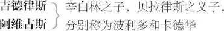

辛白林
辛白林 ，不列颠国王
伊诺贞 ，辛白林与其前妻之女，后来化名为菲代尔
王后 ，辛白林的第二位妻子
克洛顿 ，王后之子，辛白林的继子
波塞摩斯 ·莱奥那图斯，伊诺贞之夫
皮萨尼奥 ，波塞摩斯的仆人
考尼律斯 ，医生
宫女 ，伊诺贞的侍女，名海伦
二贵族 ，克洛顿的侍臣
二绅士
二不列颠将领
二狱卒
贝拉律斯 ，被放逐的贵族，化名摩根，住威尔士

菲拉里奥 ，意大利人，在罗马收留波塞摩斯
亚基莫 ，意大利贵族，菲拉里奥之友
一法兰西人
一荷兰人
一西班牙人
卡尤斯·卢修斯 ，罗马军队主将
预言师 ，名费拉蒙努斯
二罗马元老
一罗马护民官
一罗马将领
朱庇特
西塞律斯·莱奥那图斯 的鬼魂，波塞摩斯之父
波塞摩斯母亲 的鬼魂
波塞摩斯两兄长 的鬼魂
贵族，侍从，信差，乐师，罗马护民官，不列颠
与罗马将领、兵士各数人
第一幕
第一场／第一景
不列颠王宫
二绅士上
绅士甲 你所遇之人无不紧锁眉头；
我们的性情不再服从天命，
侍臣们对国王只是假意逢迎。
绅士乙 可是到底怎么回事？
绅士甲 国王最近娶的那个寡妇有一独子，
国王打算将公主，就是王位继承人，
许配给他。可是公主偏偏看上
一位贫穷的才子。他俩私结连理，
结果她丈夫遭放逐，她也被幽禁。
所有人看来都愁容满面，但我想
国王才真是苦在心头。
绅士乙 痛苦的只有国王本人吗？
绅士甲 没能娶到公主的人当然也痛苦；
还有王后，她顶希望这门婚事能成。
侍臣们看到国王的神色，
也跟着拉长了脸，但无不
盯在眼中乐在心头。
绅士乙 何以如此呢？
绅士甲 得不到公主的那个家伙
坏得无法形容。得到她的那个人，
我是说娶到她的那个人却遭放逐，
啊！他才是好男儿！不愧造化垂青，
走遍世界也找不出另一个人
可以和他相提并论。我想，
除了他，这世上再也没有
这样一位外表英俊潇洒、
内心丰富充实的人啰。
绅士乙 你太高抬他啦。
绅士甲 先生，我并没有言过其实，
我只是简述，还没有照实详谈
他的优点。
绅士乙 他姓甚名谁，出身怎样？
绅士甲 追根问底并非我之所能；
他的父亲名叫西塞律斯，曾经
与卡西伯兰 1 合力抗击罗马人，
又追随特南休斯 2 驰骋疆场，
屡立战功，令人赞赏，
这才获赐姓莱奥那图斯 3 。
除了我们讲到的这位公子，
老英雄还有两个儿子，
都在当时的战争中阵亡。
老父丧子，真是痛彻心扉，
由于伤心过度，命落黄泉。
却说这位公子尚在母腹，
可出生后，母亲也撒手人寰。
国王收养了这个婴儿，取名
波塞摩斯·莱奥那图斯，
教养他，让他作为贴身侍从，
一切学问统统让他学习。
他接受学问就像我等吸纳空气，
青春年少，就已有丰富收获；
他住在宫中，真是稀有难得，
得到千般赞美，万般喜爱；
他是少年的楷模，青年的借镜，
对老成者，他是足资取法的后生。
说到他的爱人，他俩将天各一方，
她的价值 4 也说明珍爱的程度；
公主选中贫士，就足以看出
他有怎样的人品。
绅士乙 就冲你的这番话，我也要敬重他。
不过请问，公主是国王唯一的孩子吗？
绅士甲 确是国王唯一的孩子。
你如果不烦听，我就给你讲：
国王曾有两个儿子，大的才三岁，
小的尚在襁褓，就被人从育儿室偷走。
直到现在，任凭怎样打探与猜测，
也不知道他们的下落。
绅士乙 此事已过去多久？
绅士甲 大约二十年了。
绅士乙 国王的孩子竟这样被人偷走，
防护如此疏漏，搜寻如此迟缓，
竟然查不到他们的踪迹。
绅士甲 这固然十分蹊跷，
当事人的懈怠也着实可笑，
不过情况就是如此，先生。
绅士乙 我姑且相信你。
绅士甲 我们必须打住。
那位公子、王后和公主都来了。
同下
王后、波塞摩斯与伊诺贞上 5
王后 不，你尽管放心，女儿，
我不会像谣言所说的继母
那样仇视你。你由我来监管，
但是你的狱卒却将囚禁你的钥匙
交付给你。至于你，波塞摩斯，
一旦我能让恼怒的国王回心转意，
就保证会为你进言。你看看，
他现在怒火未消，你最好
做个聪明人，耐心接受
他对你的判决吧。
波塞摩斯 启禀王后，
我今天就离开这里。
王后 你知道滞留此地的危险。
我现在要到园子里走一圈，
虽然国王下令不许你们说话，
我却可怜你们心意难表的痛苦。
下
伊诺贞 啊！虚伪的客套。这恶妇暗中伤人，
还不忘寻开心。我最亲爱的夫君，
我有些害怕父王的怒气，
但对他我从不失神圣的孝心，
他的怒火不会将我怎样。
你得走了，而我在这里时刻
忍受怒目扫射，活着也无慰藉。
但是只要世间还有你这件珍宝，
我总有一天会再次看到。
波塞摩斯 我的女王！我的情人！
哎，夫人，不要哭泣，否则他人
将以为我悱恻缠绵，不像男子汉。
我将信守我们的海誓山盟，
永远做一个最忠实的丈夫。
到了罗马，我将住在菲拉里奥家。
他是我父亲生前的朋友，与我
曾有书信往来：你写信就寄到那里，
我的女王，你写的每个字就算
蘸着胆汁 6 ，我也愿一点点吮吸。
王后上
王后 请你们少说两句。
如果国王来了，又不知要招惹
他发多大的怒气。——我会引他
旁白
来这里：我没有对他不起，
是他自己把我的恶意当作好心，
不管我的冒犯，反而重重赏我。
［下］
波塞摩斯 这临别的时光
即便长达我们的有生之年，
也不过徒增难舍的痛苦。再会吧！
伊诺贞 不，稍等片刻：
即使你只是骑马兜风，
这样分别也太轻率。你瞧，爱人，
这颗钻石原是我母亲所有；拿去吧，心肝，
递过一戒指
好好保存着它，直到伊诺贞死后，
你另娶新欢之时。
波塞摩斯 什么？什么？另娶新欢？
慈悲的神哪，我只要你们现在给我的妻子，
请你们用死亡的锁链绑住我爱的怀抱，
拒绝接纳另外一人。愿我有生之日，
戴上戒指
你就一直留在这儿！最甜最美的人哪，
我这等贫贱，竟然换得你的青睐，
你的付出无以复加。即使是交换信物，
我也欠你许多。为了我的缘故
请戴上这个，这是爱的手铐，
套住了最美丽的囚犯。
将一手镯套在她腕上
伊诺贞 神哪！
我们什么时候再相见？
辛白林及众贵族上
波塞摩斯 哎呀！国王来了！
辛白林 你这最下贱的东西，从这里滚开！
不要再让我看见你！此令一出，你这败类
如果再混迹宫廷，休想活命。滚开！
你是败坏我血统的毒药。
波塞摩斯 神保佑你，
祝福留在宫中的好人们！
我走了。
下
伊诺贞 就算死亡的痛苦
也不会比这更强烈。
辛白林 不孝的东西呀！
你本该让我焕发青春，
反倒在我身上让岁月留痕。
伊诺贞 我请求您，父王，
不要让烦恼伤害您的身子。
我现在可顾不上您的气愤；一种高贵的
真情压倒一切痛苦、一切恐惧。
辛白林 羞耻也不顾？孝道也不讲？
伊诺贞 一切希望化为绝望，还说什么羞耻 7 。
辛白林 你本来可以嫁给王后的独生子。
伊诺贞 啊，我幸而没有嫁给他！我选择了一只鹰，
躲开了一只鸢。 8
辛白林 你选择了一个乞丐，
要让贱种占据我的王位。
伊诺贞 不，我其实是给王位增光添彩。
辛白林 啊，你这贱人！
伊诺贞 父王，
我爱上波塞摩斯，说错也是您的错：
您抚养他，叫他成为我的玩伴。
他配得上任何一个女人，
他的价值超过我的一切。
辛白林 什么？你疯了吗？
伊诺贞 差不多，父王；愿上天恢复我的理智！
我愿做一个牧牛人的女儿，愿莱奥那图斯
是邻家牧羊人的儿子！
王后上
辛白林 你这混账！——
他们俩又在一起，
对王后
你没有遵照我的命令 9 。——
把她带走，关起来。
王后 请您息怒。别说了，好女儿，
别说了！亲爱的主上，
让我和女儿谈谈，您轻松一下，
再将这件事考虑仔细。
辛白林 不，就让她花容憔悴，
每天失去一滴血；等她人老珠黄后，
为这件蠢事死去。
［辛白林及众贵族］下
皮萨尼奥上
王后 呸！你 10 必须得让步。
你的仆人来了。——怎样啦？先生，有何消息？
皮萨尼奥 您的公子与我家主人拔剑相向了。
王后 哟？
我想没出事吧？
皮萨尼奥 要不是我家主人压住怒火，
没有真打，只是随便比画了两下，
真可能已经出事啦；
他们被近旁的人拉开了。
王后 这样我很高兴。
伊诺贞 你儿子是我父亲看中的人，竟然向
一个被放逐的人挥剑。真勇敢哪！
我倒情愿他俩在荒漠 11 里打斗，
我自己拿根针在一旁，谁往后退，
我就刺谁。——你为何不与你主人在一起？
皮萨尼奥 奉他的命令，他不允许我
把他送到港口。他留下一张字条：
无论什么时候，您如有事差遣我，
都要我听从您的命令。
王后 这人一直是你们的忠实仆人；
我敢以我的名誉打赌，他一定会仍然
效忠于你们。
皮萨尼奥 多谢王后夸奖。
王后 我们出去走一会儿吧。
对伊诺贞
伊诺贞 约半小时后，请你向我回话。
对皮萨尼奥
你至少应该送我丈夫上船。
现在你去吧。
众人下
第二场／景同前
克洛顿与二贵族上
贵族甲 殿下，我劝你换一件衬衣；这一场恶战下来，你浑身冒着热气，活像献祭的牲口。热气冒出来，空气就钻进去，这外面的空气可没有你冒出来的气那么干净。 12
克洛顿 我的衬衣如果沾了血，就得换一件。我伤了他吗？
贵族乙 实在没有，甚至没让他失去耐心。
旁白
贵族甲 伤了他吗？他要是没受伤，他的身体就是一具洞穿的皮囊；他要是没受伤，他的身体就是一条刀剑横飞的大道。
贵族乙 他的剑大概欠了债，只好从偏僻小道溜走。 13
旁白
克洛顿 那混蛋不敢跟我对抗。
贵族乙 确实不敢，可他迎面而逃，直向你冲过来。
旁白
贵族甲 和你对抗？你占据的地面已经够多，他还要将落脚地拱手奉送，让你增添地产。
贵族乙 你有多少海洋，他就让给你多少寸土地。 14 狗奴才！
旁白
克洛顿 我倒不希望他们把我们劝开。
贵族乙 我也不希望，好让你倒在地上，量一量你是多么长的一个蠢材。 15
旁白
克洛顿 她竟然拒绝我，爱上那个家伙！
贵族乙 如果选择 16 正确也算罪过，那她活该受惩罚。
旁白
贵族甲 殿下，我常对你说，她的美貌和她的头脑并不相符。她有一副姣好的外表，但我看不出有什么智慧的反光。
贵族乙 她不会向傻瓜放光，否则反光会让她自己受伤。 17
旁白
克洛顿 来，我要回房间去；要是让他受些伤就好啦。
贵族乙 我并不这么想；除非是一头蠢驴栽了跟头，可是那也算不上多大伤害。
旁白
克洛顿 你们愿意跟我走吗？
贵族甲 我愿意奉陪殿下。
克洛顿 那么，来吧，我们一起走。
贵族乙 遵命，殿下。
众人下
第三场／景同前
伊诺贞与皮萨尼奥上
伊诺贞 我愿你扎根在港口的岸边，
询问每一艘来往的船舶：如果他写信，
而我没有收到，那就等于
犯人遗失了一封赦书。
他最后对你说了些什么？
皮萨尼奥 说的是他的女王，他的女王。
伊诺贞 然后挥动他的手帕了吗？
皮萨尼奥 还亲吻了它哩，公主。
伊诺贞 那没有感知的麻纱布呀，比我还有福！
这就完了吗？
皮萨尼奥 还没有，公主；当我的眼睛和
耳朵，还能从人群中将他分辨，
他一直站在甲板上，不断挥动
手套、帽子或手帕之类的物件
表达他内心的冲动与激荡，
说明他的灵魂依依难舍，
但船儿却急急驶去。
伊诺贞 你应该紧盯着他，
直到他的人影变得像乌鸦那么小，
甚至再微小一些。
皮萨尼奥 公主，我是这么做的。
伊诺贞 要是能望到他，我情愿望穿双眼，
撕裂我的眼腱 18 ，直到邈远的距离
将他收缩得像我的针尖一般大小；
不，我的眼神会追随他，直到他看似
细微的蚊蚋在空中消失，然后我才会
收回目光开始哭泣。可是，好皮萨尼奥，
我们什么时候才能听到他的消息？
皮萨尼奥 不用担心，公主，
他一有机会，就会来信。
伊诺贞 我没有和他道别，但还有
许多柔情蜜意要讲：我还没有说
在某些时辰我将如何如何想他；
我还没有让他赌咒发誓，
不要让意大利的女人们侵占
我的利益和他的荣誉；还没有要求
他在清早六点、中午和半夜时分 19 ，
在祈祷中与我相会，因为那时候
我会在天堂等他；我还没有给他
离别的热吻，我原打算在符箓一般的
三言两语 20 之间献上热吻，
父亲就来了，像一阵横暴的北风
摧残了我们含苞欲绽的爱意。
一宫女上
宫女 公主，王后请您
前去见面。
伊诺贞 我吩咐你的事情，赶快去办好。
我这就去见王后。
皮萨尼奥 遵命，公主。
众人下
第四场／第二景
罗马
菲拉里奥、亚基莫、一法兰西人、一荷兰人与一西班牙人上
亚基莫 相信我，先生，我曾经在不列颠见过他；那时他如初月升空，刚刚崭露头角，人们对他抱有很高的期望，以后他的表现也不负众望。但是，我那时候对他并不钦佩，即便他的才学已经像列好的清单一样，可以随身携带，让我逐条阅览。
菲拉里奥 你所说的他，那时候才华还不充实饱满，哪赶得上他如今里里外外的仪表和学识。
法兰西人 我在法兰西见过他：在我们那里，像他那样能够睁眼望日、灼灼其华的人有的是。 21
亚基莫 这次他和国王的女儿缔结连理，凭的是公主高贵的身价，而非他自己的才华。我敢说，这一定使他在众人口中格外身价倍增，与事实相去甚远。
法兰西人 还有，他遭到放逐也让人同情。
亚基莫 是呀，还有那些站在公主一边的人，看到他们俩硬生生被拆散，难免会洒同情之泪，也会拼命地吹捧他，只为了证明公主并非由于见识短浅的错误，才挑选了一位毫无足取的乞丐。不过，他怎么住到你的府上？你们是怎么认识的？
菲拉里奥 他父亲和我曾经一起当过兵，打过仗，对我多次有救命之恩。
波塞摩斯上
这位不列颠人来了。你们都是见多识广的绅士，就按照适合他这种异国人的身份来接待他吧。我来介绍这位先生让诸位认识认识，他是我的一位尊贵的朋友。他到底有怎样的才华，我现在不必当着他的面喋喋不休地吹捧，留待以后的事实来证明。
法兰西人 先生，我们在奥尔良就相识了。
波塞摩斯 从那时候起，我就欠着你的深情厚谊，恐怕永永远远还也还不清。
法兰西人 先生，区区小事何足挂齿，你过奖啦。能为你和我的国人从中调停，我很乐意。你们当时为了那么一点不起眼的小事，如果真要动手分出高低，争一个你死我活，那才不值得哩。
波塞摩斯 请你原谅，先生，我当时还是一个年轻的游子，只把别人的话当作耳旁风，干起事来更是我行我素，不愿效法他人经验。但是从我如今有所长进的见解来看——你别怪我自称有所长进——我当时争吵的意义不算微不足道。
法兰西人 不错，两个人闹到靠刀剑来解决问题，很可能你死我活，或是同归于尽。这么看来，争吵的意义确实不小。
亚基莫 能否冒昧问一句，当时争吵的分歧是什么？
法兰西人 我不妨来说说。那是一场公开的争吵，公布出来也没有什么不利。就像昨晚发生的辩论一样，我们每一个人都卖力夸耀本国的女子。这位绅士当时一口断定，并且不惜以流血证明，他的爱人比我们法兰西任何一位最出色的女郎都更美丽、更贤淑、更聪明、更贞洁、更忠实、更加多才多艺、更加不可亵渎。
亚基莫 那位女子要么已死，要么这位绅士的观点已变。
波塞摩斯 她的美德依然如故，我的主张也依然未变。
亚基莫 你不可以说她超过我们意大利的女人。
波塞摩斯 我在法兰西那般激动，现在对于她的赞美也不减毫分，尽管我自认只是她的崇拜者，而非她的意中人。
亚基莫 人们虽然常将美丽和贤淑相提并论，但是你们不列颠的女人，却没有一位称得起美丽与贤淑的美誉。要是她超过我所见过的女人，就像你戴的钻石让我所见过的许多钻石都黯然失色，那么我不能不相信她的确比许多女人要好；可是，我既没见过什么最珍贵的钻石，你也没见过最出色的女人。
波塞摩斯 我赞美她是按质论价，我的钻石也是一样。
亚基莫 你对它估价几何？
波塞摩斯 超过全世界所有的一切。
亚基莫 要么你无敌的情人已死掉，要么她的价值也微不足道。
波塞摩斯 你错了。钻石可以出售，也可以赠送；钱财够了就可以买到，交情够了也可以赠送。情人却不可以买卖，而是神的恩赐。
亚基莫 神已经把这样的恩赐赏给你了吗？
波塞摩斯 多谢天恩，我还会永远将之保存。
亚基莫 名义上你可以把她据为己有，不过你要知道，野鸟专爱落在邻家的池子上 22 。你的戒指也可能被偷走，你那无价的美人难保不会被别人染指。一个轻薄，一个易损。如果有狡黠的盗贼，或是风流的官人，难保不会把这两样一起骗走。
波塞摩斯 你们意大利没有这样风流的官人，能够克取我爱人的贞操，如果你所谓的轻薄就是指贞操能否保持。我不怀疑你们有的是盗贼，可我并不因此为我的戒指担心。
菲拉里奥 就此打住，诸位先生。
波塞摩斯 先生，我非常愿意。这位尊贵的先生，我谢谢他，他没把我当作外人，与我一见如故。
亚基莫 只要我有机会直接见到你美丽的爱人，跟她攀上交情，至多只要经过五次交往，我就能让她暗动芳心，忘却旧情，甚至使她投怀送抱，让我随意摆布。
波塞摩斯 不会，不会。
亚基莫 对此我敢拿我的一半家产对你的戒指作注，我认为这价值要比你的戒指贵重不少；可是我打赌的目的不是要破坏她的名誉，而是要打击一下你的自信。为了使你不见怪，我敢对世上任何女子作同样的尝试。
波塞摩斯 你这样胡言乱语、肆无忌惮，我相信，你一定会为你的尝试付出应有的代价。
亚基莫 什么代价？
波塞摩斯 一顿拒斥，虽然你所谓的尝试应该不只是被拒，还应受到严惩。
菲拉里奥 二位，别说了，这场争论来得太突然，就让其自生自灭吧。我倒请你们二人交个朋友。
亚基莫 为了证明我所说的话，我情愿投下我的财产，加上我邻人的财产，作为赌注。
波塞摩斯 你要向哪一个女人进攻？
亚基莫 你的女人，对于她的忠贞你是那样有把握。我以一万金币作注，跟你的戒指打赌。要是你把我介绍到她居住的宫廷里去，只要经过两次见面谈话的机会，我就可以将她的贞操夺下，你别以为有什么万无一失的保障。
波塞摩斯 我也拿金钱和你的金钱打赌；我的戒指是我手指的一部分，和手指同样珍贵。
亚基莫 你到底是她的意中人，这一招算你聪明。就算你花一百万金币买女人半钱的肉，你也无法保藏得使它不腐烂。但是我看你是有些信教的，所以你害怕了。 23
波塞摩斯 你习惯于胡言乱语，我倒希望你不要开玩笑。
亚基莫 我说的话，我自己便可以做主。我发誓，只要我说过的话，就一定要办到。
波塞摩斯 真的吗？我只是把我的戒指借给你，等你回来再说；我们要立个契约。我爱人的美德远非你卑劣的想法所能企及。我看你敢不敢和我打赌：这是我的戒指。
菲拉里奥 我不准你们打赌。
亚基莫 神明在上，都是一样。如果我不能带给你充分证据证明我已经享用过你爱人身上最珍贵的部分，我的一万金币就属于你，你的戒指也物归原主。如果我返回之时，她的贞操像你所信赖的那样完好无缺，你的宝贝情人、你的戒指和我的金币就都属于你。条件是你得介绍让我和她自由交流。
波塞摩斯 我接受你的条件，让我们这就把契约订下。但是你必须得负如下责任：如果你染指于她，并且直接向我证明你已经得手，我就不再与你为敌，因为她不值得我们争执；如果她始终不受你的勾引，你又不能证明她已失身于你，那么为了你的恶语伤人，为了你破坏她贞节的举动，你必须拿剑来向我交代。
亚基莫 我们握手，立下契约。我们请律师把这些条款记下，然后我直接去不列颠，以免这桩交易冷淡下来，无果而终。我去取金币，并且把我们双方的赌注都登记下来。
波塞摩斯 一言为定。
［波塞摩斯与亚基莫下］
法兰西人 你看他们是否当真？
菲拉里奥 亚基莫先生绝不会改变主张。我们跟着他们去吧。
众人下
第五场／第三景
不列颠王宫
王后、众宫女与考尼律斯上
王后 趁地上露水未干，来把那些花儿采，
要赶快。花的单子在谁手里？
宫女 在我这儿，王后。
王后 快去吧。
众宫女下
大医师，你把那些药带来了吗？
考尼律斯 启禀王后，带来了：这就是。
呈上一小匣
不过，恳请王后不要见怪，
出于良心，我要问一句：
您为何命令我带给您这些剧毒的药剂？
其药性虽然缓慢，但是人服下后，
就会衰竭而死，无药可治。
王后 我很奇怪，医师，
你会向我提这样的问题。我做你的学生
不是已经好久了吗？你不是已经教过我
如何制造香水？如何萃取？如何保鲜？
是呀，我们伟大的国王不也时常
央求我给他一些制剂？我已经取得
如此进步，除非你认为我居心不良，
难道我不应该在其他方面进一步
充实我的知识吗？我打算在那些
不值得处以绞刑的动物身上，
而不是在人身上，试试你的这些
药剂的效力如何，然后再施以解药，
通过这样的做法，考察它们
各种各样的药性和效果。
考尼律斯 启禀王后，
您做这样的试验只会使您心肠变硬；
另外，观察这些药剂的效果，
不但会感染毒性，还会败坏道德。
王后 啊，你且放心。
皮萨尼奥上
来了一位献媚的奴才，
旁白
我将先从他下手。他忠于他的主子，
与我儿子为敌。——怎么样，皮萨尼奥？——
医师，现在你没有什么别的事了，
请便吧。
考尼律斯 我实在怀疑你的居心，王后，
旁白
但是你害不了人。
王后 你听着，我有话要说。
对皮萨尼奥
考尼律斯 我可不喜欢她。她自以为
旁白
拿着慢性的猛药；可我知道她的心思，
我不会拿那种危险的毒药给她去害人。
她拿到的药剂只会让人片刻昏迷，
为了验证效果，她一开始或许会
先拿猫狗做试验，而后用于人体。
这药能造成死亡的症状，
可是并无危险，只不过暂时
把人的精神封闭起来；
醒来之后，会格外精神饱满。
王后还不知我用假药将她蒙骗；
我越骗她，倒越显不虚假。
王后 没别的事了，医师，
有事再派人请你。
考尼律斯 恭请告退。
下
王后 你说她还在哭吗？你看她到时候
会不会冷静？她现在是情迷心窍，
以后会不会听从别人的劝告？
你去劝说一番，我等你的回音。
要是她说爱我的儿子，我就立刻宣告
你和你的主人地位一样高，甚至更高。
因为波塞摩斯的命运已濒临绝境，
他的名声气数已尽。他既不能回乡，
也不能继续住在现在的地方。
换个住处对他来说只是去了旧愁
又换新忧。他每过一天只是徒增
一天的消耗。这家伙已经东倒西歪，
你还能指望他给你什么依靠？
他既不能改头换面重新做人，
也没有朋友可以为他撑腰。
她丢下小匣，皮萨尼奥拾起
你所捡起的，你可不知道
是什么东西；不过，既然有劳你
捡起，你就拿去吧。这是我
制作的东西，救过国王五次性命。
我不知道还有什么更灵验的妙药。
不，请你拿去吧，这不过是一点
甜头，我以后还会给你更多好处。
告诉你的女主人她是什么处境，
就用你自己的口气说给她听。
你想想，换个主子你将时来运转，
公主还是你的主子，再加上我儿子，
他会对你另眼相待。你要怎样的
富贵功名，我都会说动国王将你提拔；
至于我本人，既然鼓动你邀功请赏，
一定会重重谢你。喊我的侍女来，
想一想我的话吧。——
皮萨尼奥下
这个奴才狡猾又忠贞，
谁也不能动摇他的心，
他为主人效命，就是提醒她坚守
对丈夫的婚约。我已经把毒药给他，
他要是服下，就再也没人为公主跑腿，
向她的爱人传递消息；从今往后，
如果她不回心转意，免不了也要
尝尝这个滋味。——
皮萨尼奥及众宫女上
执花
好，好！干得好，干得好！
这些紫罗兰、莲香花、樱草花
都送到我的房间去。再会，皮萨尼奥，
想一想我的话。
王后及众宫女下
皮萨尼奥 我是要想一想，
可是如果我不忠于我的好主人，我宁愿掐死
我自己；这就是我将为你做的事情。
下
第六场／景同前
伊诺贞独自上
伊诺贞 狠心的父亲，奸诈的继母，
还有一个胡搅蛮缠的求婚者，明知我是
有夫之妇，丈夫已被放逐。啊，丈夫！
正是我伤痛的心尖！还有那些不断的麻烦！
要是我也像我的两个哥哥一样，
从小就被人偷走，那倒也舒畅；
那些心高志远的人往往含辛茹苦，
那些小人物愿望朴实，反而天公作美，
诸事顺遂。哎，谁来啦？
皮萨尼奥与亚基莫上
皮萨尼奥 公主，罗马来的一位高贵绅士，
带来了我主人的信件。
亚基莫 公主，您的脸色怎么变啦？ 24
尊贵的莱奥那图斯安全无忧，
并且向您致以亲切的问候。
呈上一信
伊诺贞 多谢，好先生，
欢迎你的到来。
亚基莫 她的仪表可真是华丽无比！
旁白
要是她再有同样高贵稀有的心地，
那她就是独一无二的凤凰 25 ，我的赌注
就算输掉。让勇气来帮忙，
让我浑身上下挥洒一种放浪，
或者像安息人边战边退 26 ，
而不是一味逃避。
伊诺贞 读信 “此君名高德韶，我承他厚待，感激不已。望你以礼相待，
如你之待我。莱奥那图斯。”
我只念出这么一段，
信里其余的话也让我心中
一片温暖，充满感激。
尊贵的先生，我要用一切言语
向你表示欢迎，并在我能力之内
尽情款待你。
亚基莫 多谢，美丽的女郎。——
唉！男人全都疯啦？造化赐予他们眼睛，
让他们仰观苍天，俯察海洋和陆地的
丰富物产；让他们能够分别
天上灿烂的星辰和海滩上
一模一样、不可尽数的卵石；
难道我们这样宝贵的视力
却无法分辨美与丑吗？
伊诺贞 什么让你大发感慨？
亚基莫 不会是眼睛有缺陷：因为即使猩猩和猴子
在这样两个女人面前，也会冲这个叽喳点头，
冲那个扮鬼脸鄙视。也不会是判断力有问题：
因为就算是傻瓜面对这样的美丑分别，
也不会混淆。更不会是嗜好的原因：
因为面对这般清爽俏丽的女郎，
那种龌龊邋遢的淫妇只会令人作呕，
哪有欲望去消受？
伊诺贞 说实话，究竟怎么回事？
亚基莫 日久生厌的肉欲，
那已经餍足却无休止的欲望，
像木桶一边注水，还一边流溢，
饱餐了肥美羔羊，还对下水念念不忘。
伊诺贞 什么事让你如痴如醉？
你没事吧，亲爱的先生？
亚基莫 多谢公主，我很好。——先生，请你
对皮萨尼奥
告诉我的仆人就待在我和他分手的地方。
他人生地疏，脾气也不好。
皮萨尼奥 先生，我正打算去
接待他一下。
下
伊诺贞 请问，我的夫君他身体还好吗？
亚基莫 很好，公主。
伊诺贞 他还有心思找乐子吗？我希望他如此。
亚基莫 快乐极了：没有一个异乡人
像他那样高兴，那样寻欢，
人称他为不列颠的浪荡子。
伊诺贞 他在这里的时候，
总是闷闷不乐，常不知道
是何缘故。
亚基莫 我可从来没见他忧伤。他有位伙伴
是法兰西人，一位有名望的先生，
此人好像正热恋一位本国的姑娘。
他沉重的叹息像风炉一般连绵不断，
那位快活的不列颠人，我指的是您夫君，
就会哈哈大笑：“哎哟！岂不笑煞我也，
瞧瞧那男人，看历史，听传说，
或凭他自己的经验，就能得知，
女人是什么东西，还不是随波逐流？
韶华光阴追自由，还拿什么
婚姻的枷锁给自己添忧愁？”
伊诺贞 我的爱人会这样说话？
亚基莫 是的，公主，他笑得眼泪奔流。
旁听他嘲笑那个法兰西人真是
一种享受。但是，天知道，
要我说有些男人实在坏透。
伊诺贞 我希望不是他。
亚基莫 不是他，不过上天对他的恩赐，
他用起来应该感激。他自己天分高，
加上您的禀赋——我认为也属于他——
超过一切财富。对此我既赞叹称奇，
也不免感到惋惜。
伊诺贞 你惋惜什么，先生？
亚基莫 从心底替两个人惋惜。
伊诺贞 算我一个吗，先生？
你看着我：你在我身上看到
什么残缺，值得你惋惜？
亚基莫 可叹哪！唉！
让我躲开耀眼的阳光，到暗牢中
向残烛寻求慰藉。
伊诺贞 我请求你，先生，
请你开诚布公地回答我的问题。
你到底惋惜我什么？
亚基莫 我刚才正要说，
别人享受着您的——可是，
天神们才有职责伸张正义，
轮不到我说三道四。
伊诺贞 你好像知道我的什么事，
或者有关我的什么事。担心
事情会出错，比确知已经出错，
更让人难受；因为确定的事实
要么已经无可补救，要么发现及时，
还有补救之策。把你知道的一切
都告诉我，不要吞吞吐吐。
亚基莫 如果有这样的粉颊让我沐浴双唇；
这样的纤纤玉手一旦触摸，每次触摸，
就会让人从灵魂里发出忠诚的誓言；
面对此等尤物，纵使我的目光一贯放浪，
也甘心成为俘虏，在这里燃烧我的欲火。
假如我竟然还要，那活该下地狱，
还要和那些像罗马神殿前任人践踏的
台阶 27 一样下贱的嘴唇亲吻，还要去
挽那些因随时卖弄风情而变粗的手，
卖弄风情正是那些人的行当；然后
还与她们眉来眼去，她们卑贱的眼睛
可真像发臭的油脂燃放的冒烟的灯火；
那么就让地狱里的一切折磨
一齐来惩罚我的背叛。
伊诺贞 恐怕我的夫君
已经忘了不列颠。
亚基莫 也忘了他自己。不是我
乐意报告这个消息，揭发他
变心的下贱行为；而是您的优雅
有一种魅力诱使我沉默的良心
说出来这些话。
伊诺贞 我不要再听了！
亚基莫 啊，我最亲爱的人！您的遭遇
激起我的同情，也让我痛心。
无论在哪个王国，这样美貌的女郎
都可以使最伟大的君主倍增荣光；
却被与娼妓曲为比附，而那些嫖资
其实来自您的私囊！她们为了金钱，
不顾身体上种种腐臭的恶疾去应酬
那些寻花问柳之人！这种热气熏蒸 28 的
货色比毒药还要毒！您要报复呀，
否则，那生养您的人就不是王后，
而您也就败坏了您的伟大血统。
伊诺贞 报复？
我该怎样报复？如果这是真的——
因为我的心仓促之间还不能轻信
我耳闻的话——如果这是真的，
我该怎样报复？
亚基莫 他岂能让咱 29 孤枕寒衾，
过着狄安娜的女祭司那样清苦的生活 30 ，
而他自己却和那些荡妇颠鸾倒凤，
花您的钱，反过来还将您嘲弄——
报复吧！我愿奉献自己供您享乐，
我比您的那个负心汉要高贵许多，
并且将一直忠于您的爱情，
永远不变心。
伊诺贞 喂，皮萨尼奥！
呼唤
亚基莫 让我在您的红唇上献上我的敬礼吧。
伊诺贞 滚开！我的耳朵悔不该听你
讲这么久。如果你是正人君子，
你说这番话应该怀着一番好意，
不该为了你现在追求的目的，
真是卑鄙又离奇。你污蔑了一位绅士，
他绝无你所说的情况，就像你绝无
一点廉耻；你在这里调戏一位女士，
但她厌恶你如同厌恶魔鬼。喂，皮萨尼奥！
你放肆的行为一定要告知我的父王：
如果一个无礼的外邦人在他的宫廷
吆喝叫卖，犹如到了罗马妓院一般，
公然对我宣泄禽兽般的欲念，
而我的父王如果竟然认为并无不妥，
那么他便对自己的宫廷毫不在意，
对自己的女儿也不爱惜。喂，皮萨尼奥！
亚基莫 啊，我要说，莱奥那图斯你可真幸福！
你夫人对你深信不疑，不枉你对她的信任；
你最完美的品德也没辜负她坚定的信心。
愿你们幸福常伴！您嫁给了一位
最高贵的绅士，任何国家都以他为荣；
您是他的妻子，也只有最尊贵的人
才与您般配。请您原谅我！
我刚才说的话，只想知道你们的婚约
是否根深蒂固。我要把您丈夫的情况
如实重新道来：他品行诚恳正直；
他圣洁的谈吐有引人入胜的魅力，
人们乐于和他交往；每个人
都把一半的情谊交付给他 31 。
伊诺贞 你在弥补过失。
亚基莫 他坐在众人之间，好似神仙下凡；
他气质高雅，显得不同凡响。
不要生气，无比伟大的公主，
我编造了一套谎话来试探
您的反应。现已经光荣证明
您独具慧眼，选中了这样一位
稀有的郎君，自信没有差池。
我对他的友爱使我对您煽动一番 32 ，
但您是神明所造，的确与众不同，
没有一点秕糠瑕疵。望您见谅。
伊诺贞 没关系，先生。我在这宫廷里的权力供你支配。
亚基莫 请接受我谦卑的谢意。我差点忘记，
要向公主提出一项小小的请求，
不过也相当重要，因为您的夫君、
我本人以及其他几位尊贵的朋友
合伙参与此事。
伊诺贞 请问是何事？
亚基莫 我们约有十二个罗马人和您的夫君——
我们朋友之中他最尊贵——共同集资
买一份礼物献给罗马皇帝；
我代表大家到法兰西采购，
买了一个做工精致的盘子和几样
美轮美奂的珠宝，价值不菲。
我在此人生地疏，内心颇为焦虑，
想找一个安全稳妥的地方寄存。
不知您能否代为保管？
伊诺贞 非常乐意！
我以我的名誉担保它们的安全，
何况其中还有我丈夫的份子。
我将把它们放在我的闺房之中。
亚基莫 东西装在一只箱子里，
由我的仆人看守；承蒙您允许，
我就叫他们送来，只需寄存一宿；
明天我就要上船。
伊诺贞 啊！别，别。
亚基莫 非走不可，请您原谅；否则如果
延迟归期，就要失信于人。
我从法兰西渡海而来是因为
曾许诺专程来看望公主殿下。
伊诺贞 多谢你的舟车劳顿，
但请不要明天就走！
亚基莫 啊！夫人，明天我必须走；
所以我请求您，如果您要我
给您丈夫带信的话，请今晚就写好。
我已经在外耽搁太久，对于呈献
我们的礼物影响甚大。
伊诺贞 我就去写信。
把你的箱子送来，必妥为保管，
原璧奉还。非常欢迎你来！
同下
第二幕
第一场／第四景
克洛顿与二贵族上
克洛顿 谁像我这样倒霉！我的最后一投就要吻到小球 33 ，却让人把我的球给撞开了！我在上面可下了一百镑的赌注。随后一个婊子养的猴崽子怪我不该骂人，好像我骂人的话是从他那里借来的，我自己都不得随便使用。
贵族甲 他这样得到了什么？您用球打破了他的头。
贵族乙 如果挨打者和打人者的脑瓜一样，就会脑浆流淌。 34
旁白
克洛顿 当大爷的愿意骂人出气，任何旁观者都不可横加阻拦。哼！
贵族乙 不可，大人。——总不能割掉他们的耳朵。
旁白
克洛顿 婊子养的狗！让他满意？岂能和我是同一路的 35 ？
贵族乙 那就是臭味相投的傻瓜。
旁白
克洛顿 世上再也没有比这更让我恼火的事情。混蛋！我情愿不要这么高的地位。他们不敢和我打斗，完全因为我的母后。随便一个混账奴才都可以大打出手，闹个痛快，我却只能像一只没有敌手的公鸡逛来逛去。
贵族乙 你这只公鸡已去了势，戴上冠子 36 就咯咯叫。
旁白
克洛顿 你说什么？
贵族乙 要是和每一个您所侮辱的贱人动手，那样不适合殿下您的身份。
克洛顿 是的，这我知道；但是我适合侮辱那些比我低的人。
贵族乙 没错，只有您才适合这么做 37 。
克洛顿 对头，我也这么说。
贵族甲 您有没有听说今晚有一个外国人到宫里来？
克洛顿 外国人？我竟然不知道。
贵族乙 他本人就是一个外人，所以不知道。
旁白
贵族甲 是一个意大利人，据说是莱奥那图斯的一个朋友。
克洛顿 莱奥那图斯？一个被放逐的恶棍；来人无论是谁，一定也是恶棍。这个外国人的消息，谁告诉你的？
贵族甲 您的一个童子。
克洛顿 我该不该去看看他？会不会有失身份？
贵族乙 您的身份失不掉 38 ，殿下。
克洛顿 失掉是不容易，我想。
贵族乙 你是一个公认的傻瓜，你的所作所为尽冒傻气，这样的身份当然不会失掉。
旁白
克洛顿 来，我要去瞧瞧这个意大利人。我白天在地滚球上损失的，今晚一定要在他身上捞回来。跟我来。
贵族乙 我就来奉陪殿下。——
［克洛顿与贵族甲］下
他母亲那样一个诡计多端的魔鬼，
竟然会生下这样一头蠢驴！
那妇人可以用头脑克服一切，
她儿子却连二十减去二还剩十八
都算不出。唉，可怜的公主！
天仙一般的伊诺贞，你的处境好苦，
一边是受你继母挟制的父亲，
一边是不断制造阴谋的继母，
还有一个求婚者，比你亲爱的丈夫
无故遭受放逐还可恨，比他挖空心思
将你们拆散还可气！愿上天加固
你贞操的壁垒，让你美好心灵的
庙宇不受动摇；愿你立身站住，
等你的丈夫归来，安享这伟大国度。
下
第二场／第五景
伊诺贞倚在床上，一宫女上
抬出一箱
伊诺贞 谁在那里？是海伦吗？
宫女 是的，公主。
伊诺贞 什么时候啦？
宫女 快半夜了，公主。
伊诺贞 那我读书花了三小时，现在眼神疲乏。
把我刚看的一页折起来，我去睡了。
递过书
蜡烛不要拿走，就让它亮着。
要是你能够在四点钟醒来，
请叫我一声。——睡魔完全抓住了我。
［宫女下］
神哪，我把自己交给你们保护，
不要让我受到夜间妖魔鬼怪 39 的侵扰。
请求你们，保佑我！
入睡
亚基莫自箱中出
亚基莫 蟋蟀在吟唱，疲倦至极的人
在休息中恢复精力。我们的塔昆 40
就这样蹑手蹑脚地走向女郎床前，
打算破坏她的贞节。维纳斯呀，
你横陈床上的睡姿有多妩媚！
娇嫩的百合花 41 哟，比床单还洁白！
我多想去抚摸，还要吻，来个吻！
红宝石般的双唇，吻着多么销魂！
她的呼吸让这寝室弥漫着芬芳；
蜡烛的火焰向她低首，似乎要钻进
她的眼睑，偷窥蕴藏在其中的光明。
这心灵的窗口虽未打开，但透出
一片洁白与靛青，点缀着蓝天。
可别忘了我的盘算：观察这房间，
将一切都记下。如此这般的图画，
写
那边是窗户，她床上这般的装饰，
如此的挂毯与图案，以及其中的故事。
啊！还要记下她身上的某些特点，
这可比一万件不重要的家具陈设
更能证实我记录的证据并非虚谈。
睡眠哪！你是死亡的模仿，沉沉压在
她身上，让她像教堂坟墓上的雕像一般
无知无觉。脱下，脱下，
取下她的手镯
滑脱之轻易，就像戈耳狄俄斯结 42 之难解。
到手了！这将成为外在的证据，
与内在情绪一样强烈，必令
她的丈夫发狂。在她的左胸有
五点形的痣，好像莲香花芯的红斑。
这就是确证，比任何法律的担保
更有效。这秘密会逼她夫君相信我
已巧开锁钥，取走了她的贞操之宝。
不用再记，我记下这个有何用？
我不是已经把它牢牢地钉在
我的记忆之中？她看书到深夜，
看的是忒柔斯的故事。折页处
正在菲洛梅尔屈服受辱的关口 43 。
我已有足够证据；进箱子，插锁头。
快走，快走，你们这些拉夜车的龙 44 ，
让黎明打开乌鸦的眼睛 45 ！我好生恐惧：
那边是一位天使，我这里却是地狱。
钟鸣
一、二、三：时间到，时间到！
［入箱］下
床与箱子抬下
第三场／景同前
克洛顿与二贵族上
贵族甲 殿下是在失败中最镇定的人，就算翻出么点 46 ，谁也没有你这么冷静。
克洛顿 人输了钱难免心灰意冷。
贵族甲 但并不是每一个人都有您这样镇定自若的高贵秉性。一旦赢了钱，您可真是风风火火，豪气冲天。
克洛顿 赢钱会使任何人勇气大增。如果我能够得到傻丫头伊诺贞，我就会有足够的钱啦。天快亮了，是不是？
贵族甲 天亮了，殿下。
克洛顿 我希望乐师们会来：有人劝我在清晨为她奏乐，说是可以打动她的心 47 。——
众乐师上
来吧，开始调音。你们若能用手指打动她的心，那就好；我们也要用舌头 48 试试看。如果二样均不奏效，那就随她去了。但是我决不放弃。首先，来一段绮思迷人的曲子；再来一支甜美的歌，配上浓情蜜意的歌词。然后，就由她考虑。
歌
克洛顿或一乐师唱
听，听，云雀在天门歌唱，
太阳神已开始登临。
花朵中的玉液琼浆，
他的骏马一饮而尽。
万寿菊睁开眼如簇簇黄金，
万物无不温馨。我的女郎，
醒醒，醒醒！
克洛顿 好了，你们去吧。如果这能打动她的芳心，我会给你们更多的赏钱；如果不能，那是她的耳朵有病，用马鬃牛肠 49 或者宦官的嗓子都无法医治。
［众乐师下］
辛白林与王后上
贵族乙 国王驾到。
克洛顿 我幸亏一夜未睡，正因为如此这么早就起来了；他看到我如此大献殷勤，一定像父亲一样赞许我。——陛下，早安！母后，早安！
辛白林 你在此门口守候着我们倔强的女儿吗？
难道她不肯出来？
克洛顿 我已经为她奏乐唱歌，但她理也不理。
辛白林 她的心上人才被放逐不久，
她还不能把他忘怀；再过一段时间，
关于他的记忆必定将消磨殆尽，
而后她便是你的了。
王后 你千万记住父王的恩情，
他不放弃任何有利的时机
撮合你与他女儿的关系；
你也要按部就班向她求婚，
见机行事表现你的一片真心；
她越是拒绝，你越要殷勤，
好像你是受了灵感的激发，
尽心尽责一切都依从她，
除非她要赶你走，
你可以装聋卖傻 50 。
克洛顿 装聋卖傻？我不是这种人。
［一信差上］
信差 启禀陛下，从罗马来了几位使臣，
其中一位是卡尤斯·卢修斯。
辛白林 是一位贵客，虽然他这番到来
怀着敌意；不过这并非他的差错。
我们接待他还须看他主人的身份；
对于他本人，鉴于他以往待我们不薄，
我们必须给他适当的待遇。
我亲爱的儿子，向你的情人
道过早安之后，就来王后和我身边。
我要派你来招待这个罗马人。——
来吧，王后。
［除克洛顿外众人］下
克洛顿 如果她已起身，我要和她谈谈；
不然，让她继续躺着做梦。——喂！打扰啦！——
敲门
我知道她的侍女们在她身边，
我是否可以买通其中的一员？
金钱可以买通门路，往往能奏效。
不错，拿了钱，狄安娜女神的护卫们
就会监守自盗，把鹿拱手送给偷鹿人；
金钱可以让好人送命，让盗贼逍遥；
不，有时也会让好人和盗贼一道被绞。
有什么事情金钱办不到，毁不了？
我要叫她的一个侍女做我的辩护，
因为我对这个玩意儿还没摸清楚。 51 ——
敲门
打扰啦！
一宫女上
宫女 谁在那儿敲门？
克洛顿 一位绅士。
宫女 只是一位绅士吗？
克洛顿 不，还是一位贵妇的儿子。
宫女 那倒是。
有些与您同样穿着讲究的人
还夸不了这样的口。 52 殿下有何贵干？
克洛顿 我要见见你们公主。她准备好了吗？
宫女 是的，
就准备待在她的闺房。
克洛顿 这钱是给你的，
递过钱
请替我说句好话。
宫女 怎么？要买我的好名声？
请您自己说说您有什么好处？公主来了。
伊诺贞上
克洛顿 早安，美人儿；妹妹，让我吻吻你的手。
［宫女下］
伊诺贞 早安，先生。你付出了太多辛苦，
买进的却只有麻烦；我给予你的感激
就是告诉你，我根本不懂感激，
也不会表达谢意。
克洛顿 可我还是发誓我爱你。
伊诺贞 你无论怎么说，对我都一样；
你尽管永远发誓，到头来你的报偿
就是我不会赏光。
克洛顿 这可不算答复。
伊诺贞 如果你不把我的沉默当作默认，
我并不想说话。请你放过我吧！
真的，你的深情厚意只能换到
我的轻蔑冷眼；你这样富有知识，
受到教训之后，应该懂得节制。
克洛顿 眼看你疯疯癫癫，真是我的罪过。我怎忍心！
伊诺贞 傻瓜医治不了疯子。
克洛顿 你叫我傻瓜？
伊诺贞 我是疯了，就这样叫你：
如果你能忍耐，我就不再发疯。
这样我们的毛病都会治好。抱歉，先生，
你使得我忘了女士应有的礼貌，
说了这么多话。你现在听好了，
我的心事我知道，明白告诉你：
说实话，我根本不喜欢你。
我自我揭短，说话不怕残忍：我恨你。
我原以为你自己可以感受到，
无须我开口宣告。
克洛顿 你犯了
不孝顺亲生父亲的罪名。
你自以为和那下贱胚子订下了婚约，
他靠着施舍长大，吃的是宫里的
残羹冷饭；这种婚约根本不算数。
虽然在卑贱的人们之间——
谁比他更卑贱？——两情相悦
便可以私订终身，结果不过生下
一群小崽子，过着乞丐一般的生活；
可是你由于出身贵胄，就没有了
这样的自由，绝不可辱没王族的荣耀，
去委身于一个没有地位的下贱奴才，
一个一事无成的仆人，一个帮佣，
一个不够格的厨子。
伊诺贞 亵渎神明的家伙！
纵然你是天神朱庇特的儿子，
仅有高贵出身而毫无才华，
做他的仆从还嫌不够格；
在他的王国里，按照你的才能，
当一名刽子手的助手就算高抬你，
甚至还招人嫉妒，为了这样的提拔
而遭人忌恨。
克洛顿 愿南方的雾气腐蚀他的筋骨！ 53
伊诺贞 让你提起他的名字就是他的灾难，
除此之外他没有更大的祸患。
他曾经用来裹体的破衣烂衫，
比你所有的头发都变成你这样的坏蛋
加起来还要贵重。喂，皮萨尼奥！
皮萨尼奥上
克洛顿 他的衣衫？好吧，让魔鬼——
伊诺贞 你赶快去我的侍女多萝西那里。
对皮萨尼奥
克洛顿 他的衣衫？
伊诺贞 我被一个傻瓜纠缠，
又害怕，又愤怒。去叫我的侍女
寻找一只镯子，只因我不小心，
它从我手臂上滑落；那是我丈夫的礼物。
纵使拿欧洲任何一个国王的收入作交换，
我也不愿放弃那只镯子。我确信今天清早
还看见过它；昨天夜里它还
在我的腕上戴着；我还亲吻过它。
希望它不是飞到我夫君那里告诉他，
除他之外，我还吻过别的东西。
皮萨尼奥 它不会丢失。
伊诺贞 但愿如此，去找找吧。
［皮萨尼奥下］
克洛顿 你侮辱了我：
他的破衣烂衫！
伊诺贞 不错，我是这么说的，先生。
如果你要以此提出指控，就得找个见证。
克洛顿 我要告知你的父亲。
伊诺贞 还有你的母亲。
她是我的好母后，我希望她不会
认为我已经坏到极点。告辞了，先生，
你就气急败坏好啦。
下
克洛顿 我要报复！
他的破衣烂衫！好吧。
下
第四场／第六景
罗马
波塞摩斯与菲拉里奥上
波塞摩斯 不用担心，先生；但愿我有把握
挽回国王的心，就像我确信
她能够保持她的贞操。
菲拉里奥 你用了什么办法疏通他？
波塞摩斯 没用任何办法，只是等待转机；
我在目前严冬般的状态下战栗不已，
希望暖和的日子到来；我只能
怀着凋零的希望以图报答你的厚爱；
如果希望落空，我到死也难报你的大恩。
菲拉里奥 能和你这样的谦谦君子相伴，
已经远远抵偿了我的一切效劳。现在
你们的国王已经得知奥古斯都大帝的旨意：
卡尤斯·卢修斯一定彻底完成使命。
我想你们国王会答应进贡；偿付欠账，
不会再与我们罗马军队对阵；
何况过去的创痛还记忆犹新。
波塞摩斯 我确实相信——
虽然我不是政治家，也没此意图——
这将成为一场战争。你们将听到
目前驻扎在法兰西的罗马军团
即将登陆我们无所畏惧的不列颠，
但不会听到我们付出丝毫进贡的消息。
当初尤力乌斯·凯撒曾经笑话
我们国人不谙战术，但是害怕
他们的勇气。如今的不列颠人，
军纪严明加上勇气可嘉，
考验他们的人将知道
他们多么善于改进。
亚基莫上
菲拉里奥 看，亚基莫！
波塞摩斯 定是最迅捷的鹿载着你在陆地上狂奔，
四面八方的风吻着你的帆，
带着你的船飞也似的急驰。
菲拉里奥 欢迎你，先生。
波塞摩斯 我希望你已得到直截了当的回答，
所以这么快就回家。
亚基莫 你的夫人是我所见过的
最美貌的女郎之一。
波塞摩斯 也是最好的一个；否则就让她的美貌
透过闺房窗口勾引那些狂蜂乱蝶，
跟他们堕落下去。
亚基莫 这些信件是给你的。
递过信
波塞摩斯 我相信内容不会差。
亚基莫 大概是吧。
菲拉里奥 你在不列颠王宫的时候，
卡尤斯·卢修斯是否也在那里？
亚基莫 那时人们正在等候他，
但是他还没有到达。
波塞摩斯 那么暂时还没有事。
这颗钻石还依旧闪光吗？
展示戒指
或者你嫌它黯淡不值得一戴？
亚基莫 如果失去它，
我便失去与它价值相等的黄金。
我愿走一趟双倍遥远的路程，
到不列颠再次享受曾经属于我的
一夜温存。这个戒指我已赢定。
波塞摩斯 这颗钻石可不容易得到。
亚基莫 一点不难，
你的夫人很好把玩。
波塞摩斯 不要拿你的失败开涮，
先生；我希望你明白
我们已经不再是朋友。
亚基莫 好先生，我们必须继续做朋友，
如果你还信守合约。假如我
没有带回你夫人房中的消息，
我保证我们还要进一步追究；
但现在我宣布我已赢取她的贞操，
加上你的钻戒。我没有愧对她，
也没有得罪你，因为我做的一切
你们都心甘情愿。
波塞摩斯 如果你能够证明你已经
与她品尝过床榻之欢，
我的友谊和戒指就都归你。
否则，为你诋毁她的贞节，
你我拿剑决斗，是死是活，
谁也别管身后无主之物。
亚基莫 先生，我要说种种证据
可以说得非常逼真，你不得不信。
为了加强效力，我可以发誓；
不过，我毫不怀疑你将认为
靠发誓证明纯粹多此一举，
大可不必。
波塞摩斯 说吧。
亚基莫 先说她的卧室——
我承认我并没有在那里睡眠，
但是得到销魂的东西怎能合眼——
那里张挂着蚕丝和银线编织的壁毯，
上面绣着克莉奥佩特拉初遇罗马情人，
锡德纳斯河水 54 泛滥到岸边，因为河水
载着太多的船只，或者太多的傲气。
这件作品做工精致，富丽堂皇，
其工艺和价值难分高下；我惊讶
世上居然有如此罕见与逼真的杰作，
因为那栩栩如生的故事真是——
波塞摩斯 这是真的。
不过，这也许是你在这里听我
或者别人说过。
亚基莫 还有更多的细节
可以证实我是亲眼所见。
波塞摩斯 必须要证实，
否则你的信誉就会有亏。
亚基莫 壁炉在卧室的南面，
上面雕刻着贞洁的狄安娜女神沐浴 55 。
我从未见过这样呼之欲出的雕像；
那雕刻家简直是无声的造化师，
他的作品除了不能活动，不能呼吸，
简直巧夺天工。
波塞摩斯 这也许是
你道听途说，拾人牙慧，
因为这故事经常有人说起。
亚基莫 卧室的顶部装饰着
精雕细刻的金色天使。我忘了说，
壁炉的柴架上有两个银制的丘比特，
都是单腿站立，闭着眼睛 56 ，
悠闲地依靠在火炬上。
波塞摩斯 这就有关她的贞操！
就算你亲眼看到这一切——
你的记忆力确实值得赞美——
你对她卧室中所有陈设的描述
并不能保全你所押的赌注。
亚基莫 你要不怕脸色发白的话，
展示手镯
我斗胆亮亮这件宝贝；看看吧，
不过我还得收起来；它必须和你的戒指
成双配对，我要将它们一起据为己有。
波塞摩斯 天哪！
让我再看一下。这是我
留给她的那只手镯吗？
亚基莫 先生——我感谢她——正是那只。
她亲手从手臂上取下，那情景
现在还历历在目；她的优美动作超过
礼物本身的价值，也使它格外宝贵。
她将宝贝赠送于我，并说曾经珍惜。
波塞摩斯 也许她将之取下，
是要你送给我吧！
亚基莫 她在信里这么写了吗？
波塞摩斯 啊！没、没、没，是真的呀！来，这也拿去。
递过戒指
对于我的眼睛，这就是一个蛇妖 57 ，
看一眼就能致命。有了美貌就
甭想贞操；有了虚饰就莫要真相；
有别的男人插腿，就别指望爱情。
女人们虽信誓旦旦，从不为之牵绊；
她们不顾自己的名节，管它是何东西。
啊！无比的虚伪！
菲拉里奥 请冷静，先生！
且拿回你的戒指，你还没有将它输掉；
很可能是贵夫人将它遗失；或者，
天知道是不是她的一个侍女
受了贿赂，把它偷了出来？
波塞摩斯 不错，我倒希望
他是这么得到的。把戒指还给我，
收回戒指
给我提供一些比这更有效的关于
她肉体的标记，因为这是偷来的。
亚基莫 凭朱庇特发誓，这宝贝取自她的手臂。
波塞摩斯 你听听，他在发誓，凭朱庇特发誓。
这些都是真的；不，你拿着这个戒指。
她不会无心将之遗失；她的侍女们
都忠贞不贰，难道会因受贿就去偷走它？
况且是受陌生人的贿赂？不，他一定已经
享受过她的肉体；这就是她失贞的铁证；
她花了这么高的代价购买娼妇的头衔。
来吧，拿走你的酬劳；让地狱里
再递过戒指
所有的魔鬼来争抢你们二人 58 ！
菲拉里奥 先生，冷静冷静：
即使他发誓，也不足以动摇
你对夫人深厚的信心。
波塞摩斯 不要再说；
我的爱人已被他奸淫。
亚基莫 要是你还进一步寻找
让你信服的证据，在她那值得抚摸的
酥胸下有一颗痣，骄傲地占据着
那个最销魂的位置。凭性命起誓，
我吻过这颗痣；这一吻又让我
重燃欲火，立刻寻求再次得到满足。
你还记得她身上那个黑点吧？
波塞摩斯 当然，这就证明
她另外一个污点 59 ，大到充塞整个地狱，
即使除此之外她没有别的污点。
亚基莫 你还要再听下去吗？
波塞摩斯 别逞你的数学才干，多少回合无须细算；
得手一次就等于一百万次。 60
亚基莫 我敢发誓——
波塞摩斯 不必发誓。
你若发誓说你没有得手，就是说谎；
如果你敢否认你给我戴了绿帽子，
我就要杀了你。
亚基莫 我什么都不否认。
波塞摩斯 啊！我现在就想把她弄到这里，
将她大卸八块！我要回到宫廷里去，
当着她父亲这样干。我总得干些什么。
下
菲拉里奥 完全失去了自制力！
你已经获胜。让我们跟着他，
以防他在这样的盛怒之下
做出不利于他自己的事情。
亚基莫 我十分愿意。
同下
波塞摩斯上
波塞摩斯 男人要生存，难道除了和女人合作，
就没有别的办法？我们都是杂种 61 ，
当我在母亲肚里受孕结胎时，
那个被我称作父亲的最可敬的男人
究竟在哪里，我不得而知。不知道
谁用他的家当造了我这块假币。
我母亲当时好似圣洁的狄安娜，
我的妻子如今也看似完美无瑕。
啊！报复，报复！她总是阻挠我
顺理成章的求欢，时常劝我节欲；
那种面带红晕的娇羞神态，
就是老迈的农神 62 看了也心生怜爱；
我以为她像未见阳光的冰雪一般贞洁。
啊！所有的魔鬼！这个猥琐的亚基莫
初次求欢，一小时之内，或许不到？
也许闷不吱声，像一只饱食的公猪，
粗壮又凶猛，“啊！”一声就扑上去；
没有任何反抗，就算半推半就，
他也早就料到。但愿我能找出
我身上属于女人的部分！因为我断定
男人根本没有作恶的冲动，即使有，
也来自属于女人的那部分。请听好：
说谎是女人的习气；谄媚，女人的；
欺骗，女人的；肉欲和淫念，女人的；
报复心，女人的；野心、贪婪、接连的挥霍、
蔑视、恣意的淫欲、诽谤、反复无常，
一切可以罗列的，不，连地狱
所知道的罪恶，女人的，部分或是全部；
宁可说是全部；因为即使干坏事，
她们也不专一，常常刚干一件坏事，
就要换新鲜的花招。我要写文章，
鞭挞她们，憎恶她们，诅咒她们；
但表达仇恨的高明手段，
应该是让她们称心如愿，
这远胜于魔鬼所能加给她们的祸患。
下
第三幕
第一场／第七景
不列颠王宫
辛白林、王后、克洛顿及众贵族列仪仗自一门上，卡尤斯·卢修斯及众侍从自另一门上
辛白林 说吧，奥古斯都·凯撒有何赐教？
卢修斯 当初尤力乌斯·凯撒——人们回想起来
他还如在眼前，他的事迹也将永远被人们
口耳相传——当他来到并征服不列颠之时，
正是您的叔父卡西伯兰执政，
他因凯撒的称赞而名闻遐迩，
而且他的功劳也值得称道。
他答应每年向罗马进贡三千镑，
并且作为定例传诸后世，
可是陛下近年来并没有履行。
王后 为了免除你们的诧异，
今后我们将永远废除这一定例。
克洛顿 凯撒虽然辈出，但是下一位尤力乌斯
却不知何时问世。不列颠是一个独立世界，
我们长鼻子是为了出气，
难道要为此给他人还债？
王后 当初他们从我们手中
夺走的有利时机，如今又重新
回到我们手里。陛下，不要忘了
您的列祖列宗，以及您岛国的
大好河山；好似海神的林苑，
绝壁悬崖，层林密布，不可攀援；
四周海浪咆哮，沙滩绵延，会颠覆
敌人的舰船，甚至吞没桅杆顶端。
要说凯撒曾经征服这里并没错，
但是所谓“我到来，我看见，我征服” 63
这样的大话并非在这里发表。
在这里，他首次尝到屈辱的滋味，
在遭受两次失败之后，被赶出
我们的海岸；他的船只如同可怜的玩物，
在我们汹涌的大海上，好似蛋壳
随波逐流，一碰到礁石就撞得粉碎。
为了庆祝胜利，著名的卡西伯兰——
他一度使凯撒屈服，啊，无常的命运！——
下令路德城 64 燃起欢庆的火炬，
让不列颠人高视阔步，勇气大增。
克洛顿 得啦，我们不再进贡。我们如今的王国比那时候强大许多；而且正如我所说，这世上已经没有那样一位凯撒，有些凯撒或许有鹰钩鼻，但却没有他那样强劲的臂膀。
辛白林 儿子，让你母亲说完。
克洛顿 我们还有不少人具有卡西伯兰那样强硬的手腕。我没说我也算一个，但我有手腕。为什么进贡？为什么我们要进贡？如果凯撒能用毯子遮住太阳，或者把月亮装进口袋，为了光明，我们就向他进贡；否则，父王，请求你不要再进贡。
辛白林 你要知道，
对卢修斯
在咄咄逼人的罗马人逼迫我们
进贡之前，我们本来自由自在。
当初凯撒雄心勃勃，几乎要吞并
整个世界；他毫无借口地把这枷锁
套在我们身上。而摆脱这个枷锁，
正是我们自认为骁勇善战的民族
应有的使命。我们现在正告凯撒：
制定我国法律的穆尔穆蒂乌斯 65 是我们祖先，
那法律的效用曾遭到凯撒武力摧残；
凭我们现有的力量，恢复法律的尊严
乃是我们义不容辞的责任，纵然
因此而开罪凯撒也在所不顾。
穆尔缪提斯为我们制定法律，
他是第一个将金冠戴在头顶、
自立为王的不列颠人。
卢修斯 我很遗憾，辛白林，
我要宣布奥古斯都·凯撒为您的敌人。
在这位凯撒麾下做奴仆的国王
多过您全国的官吏。听好，
以凯撒的名义，我现在向您宣告：
战争与毁灭将降临到您的头上，
等着面对无敌的军队。宣告完毕。
多谢您对我个人的礼遇。
辛白林 我们欢迎你来，卡尤斯。
你们的凯撒曾封我为骑士；我在他的麾下
度过许多青春时光，从他那里获得荣誉；
现在他要剥夺我的荣誉，如有必要
我当誓死保卫。我完全知道
潘诺尼亚人和达尔马提亚人 66 为了自由
已经揭竿而起。知道这样的先例
而不去效仿，不列颠人就没有骨气；
不可以让凯撒把我们看低。
卢修斯 让事实证明吧。
克洛顿 国王陛下对你表示欢迎。请你在我们这里逗留一两日，延期几天；日后我们兵戎相见，地点将是环绕我国的大海；如果你们把我们赶走，国土便归你们所有；如果你们的企图失败，我国的乌鸦会拿你们饱餐一顿 67 。如此而已。
卢修斯 好吧，先生。
辛白林 我已知你主人的意图，他也知我的答复；
余下的话就是“欢迎光临” 68 ！
众人下
第二场／景同前
皮萨尼奥读信上
皮萨尼奥 怎么？犯有奸情？你为什么不提
指控她的是哪一个妖魔？主人哪！
你的耳朵灌进了什么离奇毒药！
哪个口毒手狠的意大利人这样
搬弄是非，使你轻信谗言？
不忠贞？不，她就是因为忠贞
才受尽折磨；不只是本分的妇人，
更是圣洁女神，抵抗着让人失节
堕落的种种逼迫。啊，我的主人！
你现在对她所怀的卑劣居心
恰恰符合你的卑微命运。怎么？
我该杀了她，因为我曾宣誓效忠于
你的命令？我，她？她的血？
如果杀人才算尽职，我永远不算
一个尽职的人。难道我看起来
缺乏人性，可以把这样冷酷的事情
摊到我头上？——“务必照办：
读信
我已另有一函给她，让她亲自吩咐，
给你下手的机会。”啊，可恶的信纸！
你的内容就像你上面的墨水一般乌黑！
冷漠无情的玩意儿，看起来处女般纯洁，
竟是这罪行的帮凶！瞧，她来了。
伊诺贞上
主人的命令我要当作毫不知情。
伊诺贞 喂，皮萨尼奥！
皮萨尼奥 夫人，这儿有我主人的一封信。
伊诺贞 谁？你主人？那便是我的夫君莱奥那图斯！
啊！星相学家对天上的星辰，如果能像我
对他的字迹一般熟悉，可真算学识精深，
他就能洞察未来。仁慈的神哪，
让这信中洋溢着爱，夫君的健康
和他的满意，而不是我俩的分离。
让他尝尝这种苦头也好。有些痛苦
有药物的疗效，譬如分离就是爱的药剂，
除此之外，愿他一切如意。
好封蜡！借光借光，
启封
愿为私信制造封蜡的蜜蜂们有福！
情人和叛徒在启封时有不同心愿，
你们将叛徒投入监牢，也固封了
爱神的信笺。神哪，愿是好消息！
“我最挚爱的人，你若不肯与我再见一面，纵使我回国冒令尊之盛怒，受法律之严惩，于我尚不如此残酷。请注意，我已到坎布里亚之米尔福德港 69 ；闻讯后，你将如何行事，悉听你自己的爱情做主。愿你幸福美满，我将永远忠于誓约，对你的爱与日俱增。波塞摩斯·莱奥那图斯。”
读信
啊！我愿有一匹插翅的马！皮萨尼奥，
听见没有？他在米尔福德港。你看一看，
告诉我去那儿有多远。一个人如果
没有急事，到那里要花一个星期，
我能否在一天之内飞奔到那里？
所以，忠心的皮萨尼奥，你也像我一样
渴望见到你的主人。啊，纠正一下，
你不如我渴望，虽然也渴望，程度低一些；
啊，和我不一样，我的渴望无边无际；
说，快说——爱情顾问说话滔滔不绝，
让耳朵难以承受——到幸福的米尔福德
到底有多远；并且，你还要告诉我，
威尔士何其幸运拥有这样一个港口。
但首先要说，我们如何从这儿
偷逃出去；从离开到返回这儿的
一段时间，我们找什么借口掩人耳目；
不过，先说怎么离开此地。
为什么还未开始就需要找借口？
这个我们以后再说。请你说说，
我们骑马每小时可以走
几十哩路程？
皮萨尼奥 公主，从日出到日落，
您最多能骑二十哩，也许还高估太多。 70
伊诺贞 哎呀，一个骑马去受死刑的人
也不会这么慢；我听说过赛马打赌，
那些马跑起来比钟漏里的流沙还快。
开开玩笑。去吧，叫我的侍女装病，
让她回到她父亲家里；
立刻给我准备一套骑装，
不必太华贵，只要适合
一个乡绅妻子的身份就行。
皮萨尼奥 公主，您最好考虑一下。
伊诺贞 我放眼一看，这边那边，
思前想后，都是迷雾一团，
实在看不透。去吧，我请你，
照我说的做；什么也别说，
我唯一的去向就是米尔福德。
同下
第三场／第八景
威尔士，贝拉律斯所居山洞外
贝拉律斯、吉德律斯与阿维古斯上
自洞中出
贝拉律斯 大好天气，不该躲在屋里，
尤其不该躲在我家这样低矮的屋里。
弯腰，孩子们；这个洞门教你们
如何礼拜上天，教你们低头做晨祷。
帝王的宫门高，即使巨人也可以戴着
叛逆的头巾 71 ，大大咧咧地进出，
不用向太阳道早安。敬礼，美丽的苍天！
我们虽以岩洞为家，但不像身居广厦的人
对你那样冷淡。
吉德律斯 敬礼，苍天！
阿维古斯 敬礼，苍天！
贝拉律斯 现在我们上山打猎。你们年轻人腿脚好，
到那边山上去；我就在平地上跑跑。
当你们在高处看到我如同乌鸦大小，
要想到因为地势才显出大小之分；
你们再想想我曾经告诉你们的有关
宫廷、王公和战争谋略的故事。
这样辛苦无所谓，辛苦没关系，
只要有人赏识。如果这样看问题，
则我们所见的一切，都会有所裨益。
我们常常可以引以自慰地发现
钻营粪土的甲虫比展翅高飞的老鹰
更加安全。啊，我们现在的生活
比伺候权贵、忍受叱责要高贵，
比无所事事、享受俸禄要富有，
比身穿绫罗、巧取豪夺要体面。
穿着讲究的人要裁缝脱帽致敬，
却不肯把欠账勾销；和我们不能比。
吉德律斯 这是你的经验之谈。我们是
羽翼未丰的小鸟，从不曾飞离老巢，
也不知道家乡之外还有什么世面。
这样生活也许最好，如果安宁就算好。
这种生活对于你这样饱经沧桑的人
格外甜美，适合你的垂垂暮年；
但对于我们，这是无知的暗室，
卧榻上的旅行，负债人的监狱，
画地为牢，不敢迈步。
阿维古斯 有一天我们像你这样老迈，
能有什么谈资？在阴霾笼罩的严冬，
听着风吹雨打，在这严寒刺骨的
石窟里，我们将聊些什么去挨过
冰冷的时光？我们没有任何见识，
如同野兽：捕猎时像狐狸般狡诈，
撕咬食物时像豺狼一般毒辣。
我们的勇敢只为了追逐逃亡的动物；
我们像是被囚禁的鸟，把笼子当作
我们的歌厅，放声歌唱我们的桎梏。
贝拉律斯 你们怎能这么说！
要是你们知道城市里的巧取豪夺，
亲自尝尝那种滋味；要是你们知道
宫廷里的钩心斗角，取舍都同样难熬，
爬得高，跌得重，道路滑溜溜，
走起来提心吊胆，生怕有闪失；
还有战争的艰苦，名为扬名得奖，
实际在追逐危险，一旦功败垂成，
往往只得到几行耻辱的墓志铭，
伴随几许功业的记载。唉，做了好事
反遭恶报已经司空见惯；更糟的是，
受到判罚还要恭敬致谢。孩子们哪！
世人看得出来，我是在现身说法。
我身上还有罗马人的剑伤，我的名声
曾经在最知名的人物中位列前茅。
辛白林宠爱我，谈起军人来，我的名字
总不会受冷落。那时候，我就像一棵
果实累累的大树，但一夜之间风暴突起，
或强盗光临，随你怎么说，把我成熟的
果实吹落，不，连叶子也一扫而光，
让我光秃秃的承受风雨欺凌。
吉德律斯 恩宠靠不住！
贝拉律斯 我多次告诉过你们，我并没有过错，
但是两个小人，他们的虚假誓言
竟然盖过我完好的名誉，他们向
辛白林赌咒说我勾结罗马人。
自从我被放逐之后，二十年来，
这个石窟和这片土地就成为我的世界，
我在这里过着诚实自由的生活，
报答着上天对我的厚爱,
比整个前半生都更虔诚。
不说啦，上山吧！这不是猎人的言谈。
谁最先把鹿打到，谁就是宴会的主人；
其余两个人就要来服侍他。
我们无须担心有人下毒，像那些
豪门盛宴一样。我们在山谷里见。
［吉德律斯与阿维古斯］下
天性的火花是多么难以掩盖！
这两个孩子丝毫不知他们是国王的儿子；
辛白林也梦想不到他们还活在世上。
他们认我为父，在这卑微的石洞里长大，
进进出出弯腰曲背，但是他们的思想
却直冲宫殿的穹顶；天性让他们
即使在简单渺小的事物中也表现出
超乎常人的贵胄风度。这个波利多，
是辛白林国王与不列颠的继承者，
他的父王给他取名为吉德律斯。
我的天！当我坐在三脚凳上讲述我
以往战绩之时，他心驰神往，
如身临其境。当我说到“我的敌人
这样倒下，我这样脚踏他的脖子”，
在那时，他的高贵血液涌到脸上，
他汗流浃背，青春的肌腱在鼓胀，
摆出各种姿势，表演我讲的故事。
他的弟弟卡德华，本名阿维古斯，
也毫不逊色，把情节表现得活灵活现，
并加入他的种种想象。听，猎物已受惊！
号角起
辛白林哪！上天和我的良心知道，
你不应该将我无辜放逐。所以，
我才偷出两个孩子，那时一个三岁，
一个才两岁，只想断绝你的王位传承，
正如你剥夺了我的土地。尤莉菲尔，
你是他们的奶娘，他们当你是亲妈，
每天到你的墓前致敬。
我自己呢，贝拉律斯，现化名摩根，
他们认作亲生父亲。打猎结束啦。
下
第四场／第九景
米尔福德港附近
皮萨尼奥与伊诺贞上
伊诺贞着骑装
伊诺贞 我们下马时，你告诉我那地方近在咫尺；
就算我母亲要看刚刚出生的我，那心情
也不如我这般迫切。你呀！皮萨尼奥，
波塞摩斯在哪里？你这样呆呆地看，
心里到底有什么念头？为什么
你要从内心发出深深的叹息？
你这样一副表情就算出现在画中，
别人也认为你茫然若失，无法自解。
不要摆出这吓人的样子，否则，
我会惊慌失措，无法平静。
怎么回事？你为什么以这样揪心的眼神
把这封信交给我？如果是温暖的喜讯，
你应该笑逐颜开；如果是冷酷的噩耗，
那就继续装你的苦相。我丈夫的笔迹！
以毒药害人而闻名的意大利 72 一定已经
将他欺骗，他现在身处困境。你说话呀，
由你口述会减少一些刺激，
我自己看恐怕会伤心欲绝。
皮萨尼奥 请您自己看吧。
您会发现我是一个倒霉蛋，
最不受命运待见。
伊诺贞 读信 “皮萨尼奥，你的女主人是一个娼妇；证据不止一样，让我心头滴血。我的话绝非无端猜疑，证据之确凿恰如我悲伤之强烈，因此我坚定了复仇之心。皮萨尼奥，你的忠诚如果没有因为她的变节而受污染，就必须为我执行此事。你必须亲手夺取她的生命，我会在米尔福德港为你安排机会。我已写信约她前往该地；如果你迟疑不决，不敢动手，却对我声称已经照办，那么你便是帮她淫乱的皮条客，对我同样是不忠。”
皮萨尼奥 我何必拔剑？这封信已经
旁白
割断她的喉管。不，这是谣言，
其锋刃比剑还锐利，其舌头
比尼罗河所有的毒蛇 73 更致命，
气息一旦乘风飞散，就会把谎言
传到世界各个角落。国王、王后、
显贵、少女和妇人，甚至幽暗的墓穴，
这种恶毒的谣言无孔不入。怎么了，夫人？
伊诺贞 不忠于他的床笫？怎样才算不忠？
是躺在床上因思念他而彻夜难眠吗？
是一时接一时地哭泣吗？是倦极入睡，
做了关于他的噩梦而哭醒过来吗？
这便是不忠于他的床笫，是吗？
皮萨尼奥 哎呀，好夫人。
伊诺贞 我不忠？你 74 的良心来作证吧。
亚基莫，你曾经谴责他行为放荡，
那时候你看起来像一个恶棍；
我现在觉得你 75 的相貌好得很。
意大利的哪位娼妇生下的淫娃
让他变了心；可怜我不再新鲜，
像一件过时衣服，挂在墙上嫌浪费，
只能将我撕毁。啊！把我撕碎吧！
男人的誓言就是女人的陷阱。夫君哪！
由于你的变心，一切美好的外表将被
看成掩饰奸恶的面具；外表并非天生，
而是故意加上的，只为引诱女人。
皮萨尼奥 好夫人，听我说。
伊诺贞 埃涅阿斯一旦被认为不忠 76 ，
正人君子接着也会遭人诟病；
西农让真诚的眼泪失去信用 77 ，
真正的苦难不再得到同情。所以你，
波塞摩斯，将使所有好男儿遭殃；
由于你的堕落，一切风流倜傥的男人
都成了负心汉。来吧，朋友，
对皮萨尼奥
你要忠实，执行你主人的命令。
当你见到他时，略加证明我的顺从。
我自己来拔剑吧，拿着，将它插入
拔剑递给皮萨尼奥
我的心窝，那是我纯洁爱情的所在。
不用害怕，里面除了悲伤空无所有；
你的主人已不在里面，他的确曾是
其中的宝藏。按照他的命令，动手吧。
做正大光明的事，你也许十分英武，
但现在你却像个懦夫。
皮萨尼奥 去，罪恶的武器！
扔剑
你不可玷污我的手！
伊诺贞 唉，我必须死；
如果我不是死在你的手上，
你便算不上你主人的奴仆。
神圣的上天严禁自杀，我胆小手软
也干不出。来吧，这儿是我的心坎。
这前面还有什么东西；且慢，且慢！
我不会抵抗，会像剑鞘般顺从。 78 这是什么？
从胸前取出信
是忠诚的莱奥那图斯写给我的经文，
可现在都变成异端邪说。去，去！
扔信
你破坏我的忠贞，再也不能护卫
我的心灵！可怜的傻瓜
就这样信任虚伪的教师；
被骗的虽然饱尝欺骗之苦，
但是那骗子才苦不堪言。
你，波塞摩斯，当初教唆我
反抗父王，还挑拨我轻蔑
王公贵族的求婚；以后你会发现
那绝不是寻常的举动，而需要
稀有的胆量；想起来，我好伤心，
你现在贪恋一个女人，一旦腻烦，
感官变得迟钝，你若再想起我，
将会感到怎样痛苦。请你赶快动手，
羔羊在恳求屠夫：你的刀子在哪里？
这是你主人的命令，也是我的愿望，
你执行得太迟缓。
皮萨尼奥 啊，宽容的夫人！
自从我奉命执行这个任务，
我还没有合过眼。
伊诺贞 动手吧，干完了就去睡觉。
皮萨尼奥 我宁可睁大眼睛，直到眼珠都掉出来。
伊诺贞 那你为什么接受这项任务？
为什么假托借口跑了这么多冤枉路？
偏偏到这个地方？为什么你我奔波，
我们的马也劳苦？目前这时候
不正好让你动手？难道怕我的失踪
将惊动宫廷？可我从没打算回头。
你已走到这一步，来到伏击地点，
选中的鹿儿就在你眼前，
为什么又改变主意不张弓射箭？
皮萨尼奥 只为了争取时间，
逃避这样一个苦差，
我已经想到一条出路。
好夫人，请耐心听我说。
伊诺贞 说吧，你尽管说得舌头酸软。我已经
听说我是个娼妇，我的耳朵受到污蔑，
再大的伤害也不要紧，医生的探针
也测不出我伤口有多深。你就说吧。
皮萨尼奥 好吧，夫人，
我原想您不会再回去。
伊诺贞 完全可能，
你带我来这里就是要将我杀死。
皮萨尼奥 不，不是这样。
如果我既忠实，又聪明，
我的计划就会取得成功。我的主人
一定受了蒙骗。有个混蛋，
哼！手段一定极其高强，
用这种该死的法子让你们两败俱伤。
伊诺贞 一定是罗马的娼妓。
皮萨尼奥 不，我拿性命发誓。
我要通知他您已经死亡，给他寄
一些带血的证物，因为我奉命
必须这么做。您从宫廷失踪的传言
将足以证实我的通知。
伊诺贞 哎哟，我的好人！
接下来我要怎么做？住在何处？怎样生活？
如果我的夫君认为我已死去，
生活对我还有什么乐趣？
皮萨尼奥 如果您愿意返回宫廷——
伊诺贞 我不要宫廷，不要父亲，不要再和那个
虽有贵族身份、但粗鲁又愚蠢的废物打交道。
那个克洛顿，他的求爱对于我
就像敌人围攻一样可怕。
皮萨尼奥 您要是不愿意回宫，
就不能待在不列颠。
伊诺贞 那去哪里？
难道所有阳光都照耀在不列颠？
除了不列颠，别处就没有日夜轮转？
世界是一部大书，不列颠这一页
却位于书外 79 ；好似水池中的一只天鹅巢。
你想一想看，不列颠之外也有人烟。
皮萨尼奥 我很高兴
您想到别的地方。罗马的使臣
卢修斯明天将到达米尔福德港。
您如今命运晦暗，如果您
让心情同样黯淡，再乔装打扮——
照您本来的样子，一定会
惹祸上身——这样您就一定会
踏上一条坦途，观察世间百态；
是的，或许走近波塞摩斯的住处，
纵然您不会亲眼看到他的一举一动，
但是至少可以随时从别人的口中
得知他真实的消息。
伊诺贞 啊！有这样的妙计，
纵使有风险，只要名节没有损失，
我也愿意一试。
皮萨尼奥 好了，那么听我说：
您必须忘记您是一个女人；骄纵
要改为顺从；胆怯与羞涩——
此乃一切女人的秉性，更确切地说
因之而显得娇媚——要改为大胆泼辣；
讥讽的话要挂在嘴边，应答机敏，
鲁莽不驯，黄鼠狼一般爱吵爱闹；
您还必须要忘掉您的花容月貌，
让它接受——啊，这么说太狠心！
不过，没有办法——让它接受
亲吻一切的提坦 80 的贪婪抚摸；
忘了您那些做工考究的华丽衣服，
以免让天后朱诺 81 嫉妒。
伊诺贞 得啦，说简单些。
我明白你的用意，几乎要
把我变成一位男子。
皮萨尼奥 首先，您要女扮男装。
我事先想到这一点，已经备好。
↓递过一包衣物↓
衣包里有紧身上衣、帽子、长袜以及
一切相关物件；穿上这样的衣服，
再模仿同龄的年轻男子的神态，
到尊贵的卢修斯面前引荐您自己，
请他收留您，告诉他您的长处何在——
如果他的耳朵能鉴赏音乐，您的声音
一听就让人相信——毫无疑问
他将乐于接受您，因为他是
一个体面的人，品德尤为高尚。
您在外面的花销全都包在我身上，
从一开始，我将保证供应。
伊诺贞 你是神赐予我的
全部安慰。请你去吧，
还有一些事情需要考虑，不过
我们要充分利用大好的时间。
我将果敢地进行这种尝试，
以崇高的勇气坚持到底。请去吧。
皮萨尼奥 好的，夫人，我们必须匆匆分手。
否则他们若找不到我，就会怀疑是我
把您从宫中拐走。我高贵的女主人，
这里有一个盒子，是王后给我的，
里面的东西十分宝贵。如果您在海上晕船，
或者在陆上呕吐，只要服下一点点，
就能药到病除。找一个隐蔽处，
换上男人的装束。愿神引导您
走上幸福之路！
伊诺贞 阿门！谢谢你！
同下
第五场／第十景
不列颠王宫
辛白林、王后、克洛顿、卢修斯及众贵族上
辛白林 恕不远送，再会吧。
卢修斯 谢谢，陛下。
本国皇帝有旨，我必须返回；
很遗憾我必须回去报告
您是我主上的敌人。
辛白林 阁下，我的臣民
不愿忍受为他做牛做马；我自己
如果不比他们表示更多的尊严，
就有失国王身份。
卢修斯 是的，陛下。请求您
派人护送我从陆路到米尔福德港。
王后，愿一切快乐降临在您身上。
辛白林 诸位，你们奉命担任护送任务，
一切应有礼节，不可疏忽。
再会吧，高贵的卢修斯。
卢修斯 把您的手伸给我，殿下。
克洛顿 以友好的方式接着，但从此以后
我就是你的敌人。
卢修斯 殿下，结果还不知道
谁胜谁败。再会吧！
辛白林 诸位贤臣，你们护送尊贵的卢修斯
一直到他渡过塞文河 82 。祝你幸福！
卢修斯等下
王后 他蹙着眉头而去；但是让他
愁眉不展正是我们的荣光。
克洛顿 这样才好，
勇敢的不列颠人都会称心如意。
辛白林 卢修斯已经把这里的情况
通告罗马皇帝，所以我们应该
将我们的骑兵和战车部署到位；
驻扎在法兰西的罗马军队不久
就会集结起来，从那里向不列颠
发动攻势。
王后 这不是可以糊涂蒙混的事情，
必须全副武装，马上应对。
辛白林 我们已经料到这一招，早就
有所准备。可是，我的好王后，
我的女儿在哪里？她没有
在罗马使臣前露面，也没有
向我请安。她简直把我
当作仇人，忘了做女儿的孝心，
我早就看出来了。叫她来见我，
我一向过于宠她。
［一或多人下］
王后 陛下，
自从波塞摩斯被放逐以后，
她一直过着深居简出的生活；
这种状态必须让时间来医治。
请陛下不要把她责骂。她是一位
受不起委屈的女子，责难对她
好似鞭挞，而鞭挞等于要她死。
一信差上
辛白林 她在哪里？
她这种目无尊长的态度该如何解释？
信差 启禀陛下，
公主的房间都上了锁，无论我们怎么
喊破嗓子也没有任何应声。
王后 陛下，上一次我探望她时，
她请求我原谅她闭门不出。
她说应该每天前来向您请安，
因为身体有恙，这种孝道现在
也无法履行。她要我把这话
转陈于您，但是因为宫中有事，
我忘记提起。
辛白林 她的门都上了锁？
最近没有露面？天哪！但愿我的担忧
不会变成事实。
下
王后 我说，儿子，跟着国王。
克洛顿 她的仆人皮萨尼奥，还有她的老用人
这两天我也没有看到。
下
王后 去吧，去找找。——
皮萨尼奥，你对波塞摩斯忠贞不贰！
他拿了我的毒药；但愿他的失踪
是由于服毒身亡，因为他相信
那是十分珍贵的东西。可是公主呢，
她到哪里去了？也许她因为绝望而自杀，
也许她乘着爱的翅膀，满怀热望
飞到她心爱的波塞摩斯那里去了。
无论是奔向死亡，还是丧失名节，
她的行为都有利我的目标。她要是倒下，
不列颠的王权就将由我说话。——
克洛顿上
怎么样，我的儿子？
克洛顿 她准是逃走啦。
进去安慰安慰国王吧；他怒气冲天，
没人敢靠近。
王后 这样反而更好；但愿
旁白
他一夜咽气再也见不到明天。
王后下
克洛顿 我对她又爱又恨，因为她美丽高贵，
具备一切贵族品质，比任何女性，
所有女性，整个女性都更优雅；
她将每个女人的优点荟萃于一身，
比她们全都高超。因此我爱她。
但是，她瞧不起我，反而对卑微的
波塞摩斯泼洒宠爱，这说明她
不识好歹，她的珍稀优点也被埋没。
正因为这样，我决定恨她，不，
我还要报复她。因为当傻瓜们——
皮萨尼奥上
这是谁？浑小子，有何居心？过来！
啊，你这宝贝的皮条客，混账东西！
你的女主人在哪里？快说，要不然
我就直接送你见魔鬼。
恐吓他
皮萨尼奥 啊，我的好殿下！
克洛顿 你的女主人在哪里？凭朱庇特发誓，
我最后一次问你。鬼鬼祟祟的小人，
我要从你的心里探出这个秘密，
要不，我就要剖开你的心来寻找。
她是不是和波塞摩斯在一起？
他浑身卑贱，没有丝毫价值。
皮萨尼奥 哎呀，殿下，
公主怎么会和他在一起？她何时不见了？
他可还在罗马哩。
克洛顿 她在哪里？走上前来，
别再吞吞吐吐，把她的下落
统统告诉我。
皮萨尼奥 啊，我最尊贵的殿下！
克洛顿 最奸诈的混蛋！
马上说你的女主人在哪里，别再废话，
别再讲什么“最尊贵的殿下”！
讲，你再不说话，我立刻
将你判罪处死。
皮萨尼奥 好吧，殿下，
我所知道的关于她逃走的经过
全都在这封信里。
展示一信
克洛顿 让我看看。我要追到她，
哪怕追到奥古斯都的皇座前。
皮萨尼奥 不交信，就没命。
旁白
她已经走得很远，他看信之后，
无非白白尾随一趟，对她并无危险。
克洛顿 哼！
皮萨尼奥 我要写信告诉我的主人，说她已经死亡。
旁白
伊诺贞哪！愿你一路顺利，再平安归来！
克洛顿 狗东西，这信可是真的？
皮萨尼奥 殿下，我想是真的。
克洛顿 这是波塞摩斯的笔迹，我认识。浑小子，如果你不愿做坏蛋，而愿为我尽忠效命，我有什么重要的事情用得着你，就是说，无论我吩咐你做什么阴损混账的事情，你都爽爽快快地替我认真办好，我就会把你当作一个诚实的人。你想要酬劳，还是想要提拔，都包在我身上，我替你讲话。
皮萨尼奥 嗯，我的好殿下。
克洛顿 你愿意为我做事吗？你既然能够一心一意追随那个一无所有、乞丐一般的波塞摩斯，就算出于感激之情，难道你不应成为我卖力的仆人吗？你可愿意为我做事？
皮萨尼奥 殿下，我愿意。
克洛顿 伸出手来，我的钱包你拿去。你手里有没有你那旧主人留下的衣服？
皮萨尼奥 有的，殿下，在我的住处，就是他与我的女主人道别时穿的那身衣服。
克洛顿 你为我做的第一件事情，就是把那身衣服拿来。这就是你的第一个差事，去吧。
皮萨尼奥 我这就去，殿下。
下
克洛顿 在米尔福德港与你相会！——我忘记问他一桩事情 83 ，等会儿一定记着问他——就在那里，波塞摩斯你这混蛋，我要弄死你。愿那身衣服快点送来。她曾经说——那种狠话搁在我心里不吐不快——她认为波塞摩斯的破衣烂衫比我这天生高贵的人物，加上我富丽的才华，更值得敬重。我就要穿着那衣服去奸污她；先当着她的面，把他杀死；让她看看我的英武，要她悔不当初，不该那样瞧不起我。他倒在地上，我还要对着他的尸首尽情辱骂发泄，然后在她身上满足我的肉欲——刚才我说，为了折磨她，我还要穿着她盛赞的衣服来发威——我要连踢带打把她赶回宫中。她曾经得意洋洋地蔑视我，我就要痛痛快快地报复她。——
皮萨尼奥上
执波塞摩斯的衣物
这就是他的衣服吗？
皮萨尼奥 是的，高贵的殿下。
克洛顿 她去米尔福德港有多久啦？
皮萨尼奥 现在恐怕还没到哩。
克洛顿 把这件衣服送到我房里去。这是我吩咐你做的第二个差事，第三个差事就是你必须自愿对我的计划守口如瓶。你只要竭尽忠心，我就会好好提拔你。我现在要到米尔福德港报仇去；我愿生出翅膀，一路飞过去。好吧，要忠心。
下
皮萨尼奥 听你吩咐就是抹杀我的名节。
对你忠心就是背叛正人君子，
我绝不肯。到米尔福德港去吧，
你根本找不到你要追寻的她。
来吧，愿上天的祝福降临到她身上！
愿这傻瓜一路重重障碍，白白奔忙！
下
第六场／第十一景
威尔士，贝拉律斯所居山洞外
伊诺贞独自上
着侍童装
伊诺贞 我看当个男的确实辛苦；
我已经筋疲力尽，连着两个夜晚
都席地而睡。若不是我的决心
支撑着我，我一定会病倒。米尔福德，
当皮萨尼奥在山顶上把你指点时，
你已经在望。天哪！难道连慈善所
都会躲避可怜人吗？我的意思是人们
本该在那里得到救济。两个乞丐告诉我，
这么走没错。苦命人自己在受磨难，
明知磨难是一种惩罚，或是考验，
难道会向人撒谎？对啦，有何奇怪，
富人们也难得说句真话。生活优渥的人
干坏事比穷困的人撒谎更加可恶，
国王的欺诈比乞丐的谎话更严重。
我亲爱的丈夫，你便是个负心汉。
现在一想到你，我连饥饿也忘了，
可刚才我饿得几乎要倒下。这是什么？
一条小路通向那边，那必是野人的巢穴。
我最好不要上门，我也不敢上门；
可是饥饿在将人打垮之前，反而会
让人勇敢。富足安宁的生活培养懦夫，
困苦永远是坚强之母。喂，有人吗？
要是有文明人，请说话；假如是野人，
要么取我性命，要么给我食物。喂！没人答话？
那么我要进去啦。最好拔出剑，如果敌人
像我一样怕剑，就看都不敢看一眼。
拔剑
天哪，但愿遇到这样一个对手！
［入洞中］下
贝拉律斯、吉德律斯与阿维古斯上
贝拉律斯 波利多，你已经证明是最佳猎手，
你是宴会的主人，卡德华和我来做
厨子和仆人，这是我们的约定。
要不是为了争出一个结果，谁也不会
挥洒辛勤的汗水。来吧，我们饥肠辘辘，
家常便饭成了可口的美味。疲倦的人
可以在硬石板上呼呼大睡，懒汉睡在
鸭绒枕上还嫌太硬。可怜的屋子
没有人照看，愿这里享有平安！
吉德律斯 我疲倦极了。
阿维古斯 我累得没了力气，不过胃口很好。
吉德律斯 洞里有冷肉，我们一边拿来充饥，
一边烹制我们今天打的野味。
贝拉律斯 且慢，不要进去；
向洞内望
要不是那人在吃我们的东西，
我一定当他是一位神仙。
吉德律斯 什么事情，父亲？
贝拉律斯 凭朱庇特发誓，是一位天使！
要不然就是人间的典范。看来宛若神仙，
原来只是一个少年。
伊诺贞上
伊诺贞 好先生们，不要伤害我。
我在进来之前，曾经打过招呼，
本想讨些或买些食物；老实说，
我什么也没偷，即使遍地撒满黄金，
我也不会拿的。这是我吃肉的钱，
拿出钱
我本想吃完之后就把钱放在桌上，
为这里的主人祷告一番，
然后就离去。
吉德律斯 钱吗，小伙子？
阿维古斯 一切金银尽可以化作粪土，
有些人崇拜肮脏的神，只有他们才认为
金钱好过粪土。
伊诺贞 我看你们怒气冲冲。
就算你们因为我的过错而杀我，
但要知道，不这样我早就没命啦。
贝拉律斯 你要到哪里去？
伊诺贞 去米尔福德港。
贝拉律斯 你叫什么名字？
伊诺贞 我叫菲代尔 84 ，先生。我有一个亲戚
要去意大利；他在米尔福德港上船，
我要赶去他那里，饿得筋疲力尽，
不得已才犯下这个过错。
贝拉律斯 美貌的少年，请不要把我们当粗人，
也不要以简陋的居所衡量我们的善心。
欢迎光临！天快要黑了，
在你离开之前我们要款待你，
我们同意你留下来，与我们共餐。
孩子们，对他表示欢迎。
吉德律斯 假如你是个女人，我一定
大胆追求做你忠实的丈夫。哎呀，
无论多高价钱，我都要将你得到。
阿维古斯 因为他是男子，我感到欣慰；
我爱他如同爱我的兄弟。欢迎你，
就像欢迎一位久别重逢的人。
热烈欢迎！快乐起来吧，
因为你处在朋友们中间。
伊诺贞 当然是在朋友们中间，
如果你们是我的两位哥哥。——如果他们是
旁白
我父亲的儿子，那么我的身价就会
降低一些；波塞摩斯呀，你我之间的
差距就不会这样悬殊。 85
贝拉律斯 他坐立不安，定是有什么烦恼。
吉德律斯 但愿我能为他解除！
阿维古斯 我也愿意，无论什么烦恼，
无论付出多少辛劳，冒多大危险。神哪！
贝拉律斯 听我说，孩子们。
他们一旁耳语
伊诺贞 伟大的人物
独白
如果住在大不过这个洞穴的宫廷里，
需要自己照顾自己，只具备良心
本有的美德——撇开反复无常的
大众所作的廉价奉承——不见得会
盖过这两位青年。饶恕我吧，神！
既然莱奥那图斯无情无义，
我愿改变性别与他们做伴。
贝拉律斯 就这样办。孩子们，我们去准备
烹制我们的猎物。英俊的小伙子，请进。
饿着肚子，说话也吃力；等我们吃过晚餐，
我们将体体面面地询问你的身世，
只要你愿意告诉我们。
吉德律斯 请过来吧。
阿维古斯 鸱枭迎黑夜，云雀迎清晨，也不及我们欢迎你。
伊诺贞 多谢，先生。
阿维古斯 请过来吧。
众人下
第七场／第十二景
罗马
二罗马元老及众护民官上
元老甲 皇帝有旨：
鉴于我国大军如今正在讨伐
潘诺尼亚人和达尔马提亚人，
我驻法兰西军团力量薄弱，
不足以平定叛变的不列颠人，
故此晓谕全国士绅为扬我国威，
踊跃从军。晋封卢修斯为总督，
全权委任各位护民官
立刻征募兵员。
凯撒万岁！
护民官 卢修斯是全军统帅吗？
元老乙 是的。
护民官 他现在还在法兰西吗？
元老甲 率领着刚才我所说的军团，
正在等候你们征募的兵员
前去补充；兵员数目和开拔日期，
在各位的委派令中
均有明确规定。
护民官 我们必将履行我们的职责。
众人下
第四幕
第一场／第十三景
威尔士境内
克洛顿独自上
克洛顿 如果皮萨尼奥指示的方向没错，我已经接近他们约会的地点。他的衣服我穿着多么合身！做这身衣服的裁缝是上帝造的，他的爱人也是上帝造的，为什么她就不合我的身？原谅我说句粗话，女人是否合身，取决于有没有冲动的骚劲。我必须要自己下功夫。我敢对自己说——一个人在自己的房间里照镜子说话并不算虚荣——我的意思是，我身体的线条和他的一样好看；同样年轻，更为强壮，命运不比他差，时运要比他强，出身也比他好，用兵作战和他同样娴熟，单打独斗还比他更加出色。可是，这个不识好歹的傻货偏偏丢下我，爱上他。人类呀，真是莫名其妙！波塞摩斯，你的头现在还长在你的肩上，一小时之内就要搬家。我要强奸你的爱人，当着你的面把你的衣服撕碎；干完之后，我要踢打她回去见她的父亲。他老人家看我用这种粗暴手段，也许会生点气，但是我母亲可以控制他的脾气，把一切都化作我的功绩。我的马已经拴好。亮出来，宝剑，去干一次奸行！命运之神哪，让他们落在我手里！这地方符合他的描述，就是他们约会的地点。那家伙不敢骗我。
拔剑
下
第二场／第十四景
威尔士，贝拉律斯所居山洞外
贝拉律斯、吉德律斯、阿维古斯与伊诺贞自洞中上
伊诺贞乔装为菲代尔
贝拉律斯 你不舒服，就留在洞里吧，
对伊诺贞
我们打猎过后回来看你。
阿维古斯 弟弟，安心住着吧；
对伊诺贞
我们不是兄弟吗？
伊诺贞 人与人之间应该像兄弟一般；
虽然贵贱不同，但都同样是
泥土所造。我病得厉害。
吉德律斯 你们去打猎，我来陪他。
伊诺贞 我没有什么大病，就是不舒服；
我可不是娇生惯养的人，没有病倒
就装出要死的样子。你们不必陪我，
不要放弃你们的日常习惯；破坏习惯，
全部都乱。我虽然有病，但你们陪着我
也于事无补。对于不善交往的人，
有人陪伴也不算安慰。我说话还
有条有理，可见病得不重。请相信我，
就算溜走，我也绝不会偷这里的东西；
偷穷人的东西，还不如让我去死。
吉德律斯 我爱你，我已经说了，
就像我爱我的父亲一样多，
一样深。
贝拉律斯 什么？怎样！怎样！
阿维古斯 如果这样说是一种罪过，父亲，
我愿和哥哥犯同样的错。我不知道
我为什么爱这个少年；我曾听你说过，
爱的理由就是无须理由。假如灵车
停在门前，要我说让谁先死，我会说：
“我的父亲，而不是这个少年。”
贝拉律斯 啊，高贵的禀赋！
旁白
卓越的天性，伟大的品种！
懦夫生懦夫，贱种生贱种；
有米谷就有秕糠，有贵胄就有强梁。
我不是他们的父亲，这少年说来真是一个奇迹，
竟然比我赢得更多的爱意。——
现在已是早上九点啦！
大声
阿维古斯 弟弟，再见。
伊诺贞 祝你们开心！
阿维古斯 祝你健康！——您请吧，父亲。
伊诺贞 这些都是善良的人。
旁白
神哪！我过去听到的都是怎样的谎言！
宫里的人说，宫廷之外全属野蛮，
经验哪，你证明那是不实的谣传；
沧海上尽管有蛟龙出没，
小溪里也有鱼鲜来佐餐。
我还是不舒服，恶心难受。皮萨尼奥，
我现在要尝尝你的灵药。
服药
吉德律斯 我还没有说动他。
他说他出身高贵，遭遇不幸；
受了他人欺骗，却仍真诚待人。
阿维古斯 他也这样回答我，可又说
以后我也许可以了解多一些。
贝拉律斯 打猎去，打猎去！
我们现在要离开你，进去休息休息。
阿维古斯 我们不会离开太久。
贝拉律斯 但愿你不要生病，
因为你还得为我们管家。
伊诺贞 不论有病没病，
我都感谢你们的友情。
［入洞中］下
贝拉律斯 我们的友情永远不变。
这个少年虽然在受苦受难，看样子
像有很好的祖先。
阿维古斯 他唱起歌来多么像天使！
吉德律斯 他的烹饪手艺多么精致！
他把菜根切成字母模样，调制的汤
像是用来滋补生病的朱诺女神。
阿维古斯 他以高雅的姿态，
让叹息声连着微笑，那叹息
似乎在自恨不能成为那微笑；
而那微笑又好像在嘲讽那叹息，
怪它不该从这样的圣殿中飞出，
与水手们诅咒的狂风厮混。
吉德律斯 我注意到
悲哀和忍耐在他心中生根，
盘根错节地纠缠在一起。
阿维古斯 愿忍耐渐渐生长，
让腐臭的接骨木不要将枯萎的根茎
紧缠在欣欣向荣的藤蔓上。 86
贝拉律斯 天已经大亮。走吧！——谁在那里？
克洛顿上
克洛顿 我找不到那些逃亡的人；
那个混蛋骗我。我好累。
贝拉律斯 “那些逃亡的人”？
他说的不是我们吧？我有点认识此人，
他是克洛顿，王后的儿子。怕有埋伏！
这么多年我没有见过他，但我知道
就是他。我们被当作亡命徒，逃吧！
吉德律斯 他只是一个人。您和我弟弟去查看
附近有没有别人；你们去吧，
让我独自对付他。
［贝拉律斯与阿维古斯下］
克洛顿 且慢，你们是什么人？
为什么见我就逃？是不是山林里的混蛋？
我听说过这种人。你是个什么奴才？
吉德律斯 听到有人叫我奴才，
要是我不揍他一顿，
那我才是真的奴才。
克洛顿 你是强盗、罪犯加混蛋。
投降吧，贼人！
吉德律斯 向谁投降？向你？你是干什么的？
我的胳膊难道没你粗？胆量没你壮？
我承认我的口气没你大，因为我不只是
把刀子放在嘴上。 87 说说你是干什么的？
为什么我该向你投降？
克洛顿 你这个卑贱的混蛋，
看见我这身衣服还认不出我？
吉德律斯 认不出，恶棍，我也不认识你的裁缝；
他是你的祖父，替你做这身衣服，
让你穿了像个人样。
克洛顿 你这个现眼的混账，
我的裁缝并没有做这身衣裳。
吉德律斯 那么，谢谢那位
把这身衣服送给你穿的人。你是个傻瓜，
我懒得揍你。
克洛顿 你这出口伤人的贼子，
听听我的名字，你就要发抖。
吉德律斯 你叫什么名字？
克洛顿 克洛顿，你这混蛋。
吉德律斯 克洛顿，你这双料的混蛋，管你叫什么，
我也不会发抖。要是你叫蛤蟆、毒蛇或蜘蛛，
我倒会怕得抖一抖。
克洛顿 为了让你格外害怕，
嘿，让你魂飞魄散，我告诉你，
我是王后的儿子。
吉德律斯 我很失望，你的样子看起来
不像你的出身那么尊贵。
克洛顿 你不害怕？
吉德律斯 我只害怕那些我所敬重的聪明人；
对于傻子，我只有嘲笑，绝不害怕。
克洛顿 受死吧！
我要亲手宰了你，而后再去追杀
刚才从这里逃走的两个家伙，
把你们的首级悬挂在路德城门之上。
投降吧，粗野的山贼！
两人且斗且下
贝拉律斯与阿维古斯上
贝拉律斯 外面没有人？
阿维古斯 一个也没有，你准是认错他了。
贝拉律斯 我也说不准。我好久没见过他，
可是岁月并没有模糊他脸部的轮廓；
他的声音吞吞吐吐，说话一惊一乍，
还是从前那样。我确信
此人定是克洛顿。
阿维古斯 我们刚在这个地方离开他们。
我希望哥哥好好教训了他一顿，
你说他非常凶恶。
贝拉律斯 我的意思是说，他还算不上
长大成人，对飞来横祸还看不清；
因为缺乏理智判断，
往往不免让人担心。
吉德律斯上
执克洛顿头颅
可是瞧，你哥哥来了。
吉德律斯 这克洛顿是个傻瓜，一个空荷包，
里面没有分文；纵然是赫剌克勒斯 88
也敲不出他的脑子，因为他根本没有；
我现在提着他的脑袋，可要我不这么做，
就轮到这傻瓜提着我的脑袋啦。
贝拉律斯 你都干了什么？
吉德律斯 干了什么我清楚，砍了克洛顿的人头。
据他自己说，他是王后的儿子；
他骂我是叛徒、山贼，还发誓说
他要亲手将我们一网打尽，
要我们的脑袋搬家——谢天谢地还在！——
把它们悬挂在路德城门之上。
贝拉律斯 我们全完了。
吉德律斯 哎哟，父亲大人，除了他发誓要
夺去的我们的生命之外，我们有什么可失去的？
法律不保护我们，我们何必示弱，
让一个狂妄自大的软蛋恐吓我们，
审判与行刑的事情都由他一人包办，
因为我们害怕法律？你们在外面
看见什么人没有？
贝拉律斯 一个人也没见。
可是安全起见，我们得认为
他来时一定带着随从。
他的脾气尽管变化无常，唉，
做坏事变本加厉一桩接一桩，
可是除非他疯了，疯狂透顶，
他绝不会独自一人跑到这里。
也许宫中有人传说，有我们这样一些人
在这里穴居狩猎，都是些不法之徒，
也许将蔓延成势；他听到这消息
——他是这样一个人——就自告奋勇，
发誓要把我们捉拿归案；不过他未必敢
独自前来，就算他斗胆这么做，
他们也不会允许。所以，我们
有理由担心他拖着一条尾巴，
这比他扛着一只脑袋更危险。
阿维古斯 让一切依照神
预言的安排进行吧；不过，
我的哥哥干得好。
贝拉律斯 我今天无心打猎；
菲代尔那孩子的病使我觉得
脚下的路似乎格外漫长。
吉德律斯 他挥舞着剑，
照着我的咽喉刺来，我夺过剑
割下他的脑袋。我要把它丢到
山后的溪水里，让它顺流漂到大海，
去告诉鱼儿他是王后的儿子克洛顿。
就这样，我可不在乎。
下
贝拉律斯 我担心他们会来报复；
波利多，但愿你没有干这件事，
虽然英勇是你的本色。
阿维古斯 但愿这是我干的，
他们报复只管冲我来！波利多，
我爱你是我哥哥，可又嫉妒你
剥夺了我这个机会；我宁愿复仇的人
追踪过来，逼我们使出全身解数，
与他们较量一番。
贝拉律斯 好啦，出了这样的事，
我们今天不再打猎，也不必去
招惹无益的危险。你先回山洞，
和菲代尔烹煮食物。我在这里，
等鲁莽的波利多回来，
立刻就带他回去吃饭。
阿维古斯 可怜的菲代尔生着病！
我想立刻去看他；为了恢复他的血色，
我愿意放尽一大群像克洛顿这种家伙的血 89 ，
并且还自夸心肠慈悲。
［入洞中］下
贝拉律斯 啊，女神！
神圣的造物者，你是在这两位
王子身上描绘你自己！他们像
微风般温柔，在紫罗兰花下拂过，
不去摇动她那芬芳的花蕊；可是一旦
他们热血沸腾，又像狂风一般
无比粗暴，揪住山松的尖梢，
强迫它向山谷弯腰。真是奇怪，
一种无形的本能让他们无须学习
就有威严，不经传授就懂得荣誉，
不模仿他人就有礼貌。他们的英勇
虽然长在山野，但照样硕果累累，
像是有人播种。还有，我想不透
克洛顿来这里对我们有什么兆头，
他这一死会给我们带来什么后果。
吉德律斯上
吉德律斯 我的弟弟在哪儿？
我已把克洛顿的脑壳丢到河里，
让他顺流而下，向他母亲传信；
他的身体在此作抵押，等他回来。
肃乐起
贝拉律斯 我心爱的乐器！
听！波利多，它发出声音；可现在
是什么时候，卡德华要将它吹奏？听！
吉德律斯 他在家吗？
贝拉律斯 他刚回去。
吉德律斯 他什么意思？自从最亲爱的母亲死后，
这乐器一直没发出声响。有肃穆的音乐，
必然有肃穆的变故。出了什么事情？
无故的欢庆和为小事而痛哭，
那是猿猴的喜悦和小孩的悲哀 90 。
卡德华疯了吗？
阿维古斯怀抱僵死的伊诺贞上
贝拉律斯 看！他来了，
怀里抱着的正是我们责怪他
演奏哀乐的可怕缘由。
阿维古斯 小鸟儿没了，
带走我们无比的怜爱。我情愿
从十六岁一晃到六十岁，
从活蹦乱跳一变而成拄杖蹒跚，
也不愿目睹这样的凄惨。
吉德律斯 啊，最芬芳、最娇美的百合花！
你现在躺在我弟弟怀中，
还不及你活着时一半好看。
贝拉律斯 悲伤啊！
谁能探测你的深度？谁能勘查
水底的淤泥，为你缓行的小舟
指示最适合停泊的港口？ 91 你受上天眷顾，
天知道你能长成怎样的男子汉；
唉，你这绝世少年在悲伤中逝去。
你发现他时怎样？
阿维古斯 全身僵硬，就是你现在看见的这样；
依然面带微笑，仿佛熟睡中受到苍蝇骚扰，
而不是面对死神的投枪发出嘲笑；
他的右脸依偎在坐垫上面。
吉德律斯 在什么地方？
阿维古斯 就在地上，
他的双臂交叉；我还以为他睡着了，
就把带钉的鞋子脱了下来，
担心我粗重的脚步声太吵。
吉德律斯 哎呀，他不过睡着了。
即使他真的逝去，坟墓就当他的床铺，
仙女们将在他的墓中流连，
蛆虫也绝不会来把你侵犯。
阿维古斯 当夏天还在延绵，
我还在这里生活，菲代尔，
我要用美丽的花朵装点你凄凉的坟墓，
有像你的面容一样洁白的樱草花，
也有像你的血脉一样蔚蓝的风铃花。
说句不该的话，野蔷薇的叶子也不及
你气息的芬芳。知更鸟会善意地
把这些香花绿叶衔来给你。 92 啊，这鸟儿
岂不羞煞那些坐享丰厚遗产、
但不知在祖先墓前立碑的后辈子孙！——
是的，当百花凋谢，我还会用
茸茸的苍苔覆盖你冰冷的遗体——
吉德律斯 请不要再说话，
不要再这样婆婆妈妈，
耽误正事。我们来埋葬他，
让我们不要再惊叹，抓紧去做
我们现在应尽的义务。到墓地去。
阿维古斯 说，我们把他埋在哪里？
吉德律斯 在我们的母亲尤莉菲尔一旁。
阿维古斯 就这么办。
波利多，虽然我们现在嗓音变粗，
让我们唱着歌送他入土，就像母亲当年
下葬时一样。我们用同样的曲调和歌词，
除了把尤莉菲尔换成菲代尔。
吉德律斯 卡德华，我不能唱；
让我一边哭泣，一边伴着你的歌声朗诵，
因为不成调子的哀歌比说谎的
祭司和庙宇还要可恶。
阿维古斯 那么，就让我们朗诵吧。
贝拉律斯 重大的悲伤看来可以医治轻微的不幸，
你们把克洛顿忘得一干二净。孩子们，
他是王后之子，虽然他来向我们挑衅，
要记住他已经付出代价；虽然人死后
不分贵贱同归尘土，但是敬畏之心，
这人间天使，仍要我们对高低的身份
作出区分。我们的敌人是个王子，
虽然你把他当作敌人要了他的命，
我们还是以王子之礼将他埋葬。
吉德律斯 请您把他的尸首搬过来。
忒耳西忒斯和埃阿斯 93 的身体
死后都是一样。
阿维古斯 要是您愿意去搬，我们就趁这时候
朗诵我们的挽歌。哥哥，开始吧。
［贝拉律斯下］
吉德律斯 不，卡德华，我们必须把他的头朝向东方 94 ；
父亲的安排自有道理。
阿维古斯 不错。
吉德律斯 那么来吧，我们抬起他。
阿维古斯 好，开始吧。
歌
朗诵或念唱，并非歌唱？
吉德律斯 不再惧怕骄阳炙烤，
也不再怕严冬凛冽；
你已受尽世间辛劳，
带上工钱回家停歇。
富贵人家的少爷姑娘，
与扫烟囱人同归泉壤。
阿维古斯 不再惧怕官家眉皱，
你已摆脱暴君打击；
无须再为衣食担忧，
橡树于你形同芦苇。
学者、医师连同帝王，
无一幸免同归泉壤。
吉德律斯 不再惧怕闪电穿空，
阿维古斯 也不再怕雷霆惊魂；
吉德律斯 谗言责难了然无踪，
阿维古斯 你已尝尽欣喜苦闷。
二人 痴男怨女何故奔忙，
命终无不同归泉壤。
吉德律斯 驱鬼人莫要惊扰你，
阿维古斯 巫术师莫要诅咒你；
吉德律斯 孤魂野鬼勿麻烦你，
阿维古斯 不祥之物勿靠近你。
二人 尘劳终了，瞑目安详；
坟冢如斯，天地流芳！
贝拉律斯搬克洛顿的尸体上
吉德律斯 葬礼毕。来，把他放下去吧。
贝拉律斯 这里有几朵花，不过午夜有更多
花儿开放；沾有夜间寒露的花草
最宜撒在墓上。把花撒在他们脸上。 95
你们本来和花儿一样，现在命终凋谢；
我们现在撒的小草最终也要枯萎。
来，走吧，离开前为他们祈祷：
土里生来土里葬；
悲欢苦乐皆过往。
［除伊诺贞外众人］下
伊诺贞 对啦，先生，到米尔福德港怎么走？
醒转
谢谢你，是林子那边吗？还有多远？
我的天！还有六哩呀！我走了一整夜，
真的，我要躺下来睡一觉。
看见克洛顿尸体
且慢，我睡觉可不要有人陪！啊，男女众神们哪！
这些花好似人间的欢乐，
这个血淋淋的人就是人间的忧愁。
我希望自己是在做梦，因为梦中我觉得
自己在看守山洞，为一些老实人做饭。
但不是如此，那只是一支来自虚无还射向
虚无的箭，是脑子在热气中虚构的梦幻 96 。
我们的眼睛有时像我们的判断一样盲目，
真的，我还害怕得发抖。上天如果还有
一丁点儿像鹪鹩眼睛一般大 97 的慈悲，
请分一些给我，威严的神哪！
现在还是梦，就算我已经醒来；心内是梦，
身外也是梦；不是凭空想象，而是实际感知。
一个无头的人！波塞摩斯的衣服！
我认识他腿的形状，这是他的手；
他的脚墨丘利一般敏捷，他的腿玛尔斯一般英武，
他的膂力如同赫剌克勒斯，他的长相好似朱庇特。 98
天上出了谋杀案？怎么头没啦？皮萨尼奥，
愿疯狂的赫卡柏 99 向希腊人所发的一切诅咒，
再加上我的，一齐投射在你身上！
你，勾结无法无天的恶魔克洛顿，
在这里害了我丈夫的性命。从此以后，
阅读和书写都成为狡诈的罪行。
万恶的皮萨尼奥，用他假造的书信，
万恶的皮萨尼奥，在这艘全世界
最雄伟的船上，击倒它的主桅杆的顶端！
啊，波塞摩斯！哎呀！你的头呢？哪里去了？
哪里去了？皮萨尼奥可以从心口将你刺死，
留下你的头。你岂能这样，皮萨尼奥？
必是他与克洛顿出于嫉妒和贪婪，
造成这样的惨剧。啊，很明显，很明显！
他给我的药，据他说滋养身体，
非常灵验，可我一吃下去不就
失去知觉吗？这证实我的推测；
这是皮萨尼奥和克洛顿两人干的歹事。
啊！用你的血给我苍白的脸增加一点血色，
万一有人发现我们，我们可以显得
格外可怕。啊！我的夫君！我的夫君！
扑尸体上
卢修斯、众将领与一预言师上
将领 驻扎在法兰西的军队已遵照你的命令
渡过海峡，到达此地米尔福德港，
与你的船队汇合，听候你的调遣。
他们已准备就绪。
卢修斯 但是罗马方面的援军到了没有？
将领 元老院已经发动意大利全国的
平民与士绅，许多人踊跃应征，
有望建立赫赫功勋；他们的首领
是勇敢的亚基莫，
锡耶纳公爵的弟弟。
卢修斯 你预料他们何时到达？
将领 只要顺风，随时可到。
卢修斯 行动如此迅速，
增加了我们获胜的希望。传令各将领
把我们目前的部队集合起来。现在，先生，
关于这场战争的结果你最近可有什么梦兆？
预言师 我曾经斋戒祈祷天神显灵，
昨夜，天神们果然托梦给我：
我看见朱庇特之鸟，罗马的神鹰，
从潮湿的南方飞到西方这个地区，
消失在一片阳光之中；要是
我的罪恶没有使我的占卜失灵，
这便是罗马大军胜利的朕兆。
卢修斯 梦常常就是朕兆，
从来不会失灵。——且慢，哇！
看见克洛顿尸体
这里怎么会有一具无头尸体？
废墟说明这曾经是一座堂皇的建筑。 100
怎么，一个侍童！伏在尸体上是死是活？
多半是死了，因为惧怕与死者同床或者
怕睡在死人身上，本是人之常情。
让我们看看这孩子的脸。
将领 他还活着，主帅。
卢修斯 那么他会告诉我们这个尸体的来由。
年轻人，说说你的遭遇，因为情况
看来太蹊跷，不由得人不发问：
你头枕的这个血淋淋的人是谁？
造物者赐给他一副美好的形象，
是谁把他糟蹋成这样？你和这个
不幸的死者有何关系？这是怎么回事？他是谁？
你是干什么的？
伊诺贞 我无足轻重；
这世上没有我，那才好。这是我的主人，
一个非常勇敢而善良的不列颠人，
被山贼们杀死在这里。哎呀！
世上再也没有这样的主人；
纵使我从东方漂泊到西方呐喊自荐，
逐个尝试，主家好，我也知恩图报，
可这样的主人再也找不到。
卢修斯 哎呀，好孩子！你的哀诉令我感动，
你横卧血泊的主人也让我怜悯。
告诉我他的名字，好朋友。
伊诺贞 理查·杜尚 101 。——尽管我说谎，
旁白
但无害于人，天神有耳，我希望
他们会原谅。——您说什么，先生？
卢修斯 你的名字呢？
伊诺贞 菲代尔，先生。
卢修斯 你已经证明你的名字实至名归；
你的名字与你的忠心非常般配。
你是否愿意跟随我试试运气？我不敢说
我和你的旧主人一样好，但是我保证
我给你的宠爱不会少。罗马皇帝
派执政官送来的举荐信，也不会比
你自身的价值高多少。跟我走吧。
伊诺贞 我跟您走，先生。但要是天神许可，
我愿以十指为锄头，挖得尽可能深，
将我的主人掩埋，免得苍蝇滋扰。
当我把树叶和野草撒在他的坟上，
念上一百遍我所能记得的祈祷，
再将之重复百遍，还要悲泣哀叹。
尽了主仆之情，我便可以追随您，
如果您愿意收留我。
卢修斯 唉，好孩子，
我与其说是你主人，不如说是你父亲。
我的朋友们，
这孩子教导我们男子汉的责任；
让我们去找一块雏菊盛开的土地，
用尖戟长矛替他挖一座坟墓。
来，把他抱起。为了你，我们要
优待他，以军人的礼节将他掩埋。
不要难过，擦干你的眼泪；
跌跤有时反带来幸运高升。
众人下
第三场／第十五景
不列颠王宫
辛白林、众贵族、皮萨尼奥［及众侍从］上
辛白林 再去，给我问问她的状况怎样。
［一侍从下］
因为儿子失踪，她急出一场病，
疯疯癫癫，恐怕难保性命。天哪，
你一时间要给我怎样沉重的打击！
伊诺贞失踪了，她是我大部分的安慰；
我的王后病危在床，偏偏又是
恶战临头之际；她的儿子走了，
而现在十分需要他。这一切打击
让我陷入绝望。可是你这个家伙，
不可能不知道她的出走，却装得
如此毫不知情。我要严刑拷打，
逼你说出实话。
皮萨尼奥 陛下，我的命属于您，
请您随意处分；可是说到公主，
我确实不知她在何处，为何失踪，
也不知她准备何时回来。恳请陛下，
就当我是您忠诚的仆人。
贵族甲 陛下，
公主失踪的那天他就在这里；
我敢担保他忠心耿耿，作为臣仆
他会恪尽职守。至于克洛顿，
我们已经派人加紧搜寻，
您放心，肯定会找到。
辛白林 这真是危难的当口。——
我暂时放过你，但是我的疑心
对皮萨尼奥
并未就此打消。
贵族甲 启禀陛下，
从法兰西开拔来的罗马军团
已经在我国海岸登陆，后面还有
元老院派来的罗马士绅组成的援军。
辛白林 我现在真希望儿子和王后给我出出主意！
这些事情简直要把我的头搅昏。
贵族甲 陛下，
您的军事准备足以对付这些
数目的敌人；再多来一些，也没问题；
只待一声令下，这些跃跃欲试的军队
就立刻采取行动。
辛白林 谢谢你！
我们退去吧，去谋划如何应付时局。
我不担心意大利会给我们带来什么麻烦，
而伤心这里发生的变故。去吧！
［除皮萨尼奥外众人］下
皮萨尼奥 自从我写信告诉我的主人，伊诺贞
已经被杀，至今没有回音，真是奇怪。
我也没有接到我的女主人的消息，
她原本答应要经常写信给我。
我也不知道克洛顿有何遭遇。
一切茫然无着，只好听天由命。
我的欺瞒显示我的忠诚，撒谎才是尽忠。
这场战争将证明我热爱国家，国王也将
知晓我的赤诚，否则我宁愿战死沙场。
一切其他疑惑到时自然显出真相；
有些无舵的船只也有幸安全返港。
下
第四场／第十六景
威尔士，贝拉律斯所居山洞外
贝拉律斯、吉德律斯与阿维古斯上
吉德律斯 喧嚣声就在我们周围。
贝拉律斯 我们躲开吧。
阿维古斯 父亲，生活如果排除了行动和冒险，
我们还能找到什么乐趣？
吉德律斯 对呀，我们躲藏在此地
还有什么希望？这样的话，罗马人
要么把我们当作不列颠人杀掉，
要么把我们当作野蛮无耻的叛徒，
先加以利用，而后再杀掉。
贝拉律斯 儿子们，
我们去山上更高的地方，那里安全。
国王的军队我们可不能参加；
克洛顿刚死不久——我们都是生面孔，
又没有编入队伍——也许会被人查问
我们的住处。万一被逼招供出
我们的所作所为，结果不免要
严刑拷打，以至处死。
吉德律斯 父亲，这个时候
您还如此多虑，有失体面，
我们听了也心存不满。
阿维古斯 他们听见
罗马军队的战马嘶鸣，
看到对方阵营篝火通亮，
耳目充满当前紧急的战况，
不大可能浪费时间关注我们，
查问我们的来历。
贝拉律斯 啊！军队里认识我的人很多；
虽然时隔多年，但是你们想想，
当年克洛顿不过是个孩子，到现在
他并没有在我记忆中湮没。再说，
国王并不值得我的效忠和你们的爱戴，
由于我被他放逐，你们没有得到教育，
不得已到这里来过这种艰苦的生活，
唉，永远丧失你们生来应有的高贵，
夏天被太阳暴晒得全身黝黑，
冬天被冻得瑟瑟发抖，可怜兮兮。
吉德律斯 这样活着还不如死了好。
父亲，求您让我们去参军吧；
没有人认识我们兄弟俩。您本人
早已被遗忘，您的模样变化也很大，
没有人会盘问您。
阿维古斯 对着这光明熠熠的太阳发誓，
我一定要去！我还从未亲眼见过
一个人死去，几乎不曾见过血，除了
胆小的野兔、淫荡的山羊和鹿的血，
这太可耻！我从未真正骑过马，
除了像我自己所跨过的羸马，
靴子上从未装过刺轮和铁跟！
望着神圣的太阳，我都觉得羞愧；
享受和煦的光辉，但是
碌碌无名，虚度光阴。
吉德律斯 对天发誓，我也要去！
父亲，如果您祝福我，允许我走，
我将倍加小心；可是如果您不祝福我，
那么就让危险降临到我头上，
死在罗马人手里。
阿维古斯 我也这么说，阿门！
贝拉律斯 你们既然把生命
看得这样轻，我就没理由更顾惜
我这身老骨头。我跟你们去，孩子们！
如果你们为国家战死疆场，
那也就是我倒下永眠的床。
带路，带路。——岁月久，尔等热血奔流，
旁白
试身手，看我天生贵胄。
众人下
第五幕
第一场／第十七景
威尔士境内
波塞摩斯独自上
执一血帕
波塞摩斯 这染血的布片 102 ，我要将你保存，因为
是我要将你染成这种颜色。已婚的男子们哪，
如果你们每个人都采用这种手段，那么
多少人将杀害比他们自己更优秀的妻子，
只因她们一点小小的差错？啊，皮萨尼奥！
好仆人并不全然服从主人的命令，
他的义务只是执行公正的命令。
神哪！如果你们早一点惩罚我的错误，
我就绝不会活到今天，铸成大错。
这样，你们就救了高贵的伊诺贞，
由她去悔过，而我这坏东西才活该
受你们的打击。但是，唉！你们为了
一点小错，就把有些人抓走；是善意，
好叫他们不再堕落。你们又放任
有的人一错再错，一次比一次严重，
使犯错者恐惧，这倒有利于他们忏悔。
伊诺贞现在被你们收去；至于我，
悉听尊便，让我服从神意而得福吧。
我随同意大利士绅们来到此地，
与我夫人的国家作战。不列颠，
我已杀了你的公主，放心吧，我不会
再给你伤害。仁慈的上天，请听我言：
我要脱下这身意大利服装，
换上一个不列颠农夫的打扮，
这样我就可以转头与来军作战。
伊诺贞哪！这样我就可以为你而死，
没有你，我的每次呼吸都好似死了一回。
就这样，杳然无闻，无人怜也无人恨，
拼这一身面对所有危险，让世人知道
在这寒碜的衣服之内，我有极大的勇气。
神哪，把莱奥那图斯家的力量注入我体内！
为了羞辱世俗的偏见，我要开创
先例，让内在品质超越外在盛装。
下
第二场／第十八景
卢修斯、亚基莫及罗马军队自一门上；不列颠军队自另一门上，波塞摩斯扮小兵随上。两军行进过场。亚基莫与波塞摩斯两人重上，交战；波塞摩斯击败亚基莫，缴其武装，离去
亚基莫 罪恶感重压在我的心头，
夺走了我的勇气。我诬枉了一个女人，
此国的公主，这里的空气都在报复我，
让我软弱无力。否则，这个乡野伧夫，
一个天生的奴才，怎能打败我这个
久经战阵的军人？我虽拥有骑士身份
和荣誉，倒落得徒有虚名，令人耻笑。
不列颠哪，要是你的士绅胜过这土人，
就像他胜过我们的贵族，那我们
简直不算人，而你们就好比神。
下
战斗继续，不列颠军队败走，辛白林遭俘；贝拉律斯、吉德律斯与阿维古斯上，欲救辛白林
贝拉律斯 站住！站住！我们占着有利地势。
这条路易于防守；除了我们的怯懦，
没有人能够打败我们。
吉德律斯与阿维古斯 站住！站住！奋战！
波塞摩斯上，支援不列颠军队；众人救回辛白林后下。卢修斯、亚基莫与伊诺贞上
卢修斯 走吧，孩子，离开军队，保全你的性命。
战争是盲目的，如此混乱，
朋友之间也会相互残杀。
亚基莫 这是他们新来的援军。
卢修斯 今天战局的变化好生奇怪；我们若不能
快速得到增援，就只能逃跑。
众人下
第三场／景同前
波塞摩斯与一不列颠贵族上
贵族 你是从他们坚持抵抗的地方来的吧？
波塞摩斯 是的。
你好像是从逃亡的人群中来的。
贵族 是的。
波塞摩斯 这也怪不得你，先生，
要不是上天帮忙，一切都完蛋；
国王本人失去两翼的护卫，全军溃乱，
只看见不列颠军人的背影，沿着一条
羊肠小道逃跑；敌人军心大振，
大砍大杀，累得舌头都吐出来 103 ，
只怕武器不够，杀不了许多。刀光之中，
有些人当场丧命，有些人受了轻伤，
有些人吓得瘫倒在地。那条小路
塞满背后挨刀的死尸和苟延残喘、
丢人现眼的懦夫。
贵族 那条小路在哪里？
波塞摩斯 就在战场附近，挖了壕沟，垒了土墙；
一个老兵占据有利地势，守在那里。
我保证，他是位忠勇之士，从他
花白的胡须可看出，他真是老当益壮，
为国立下这样的功劳。他和两个小伙子
横堵住路口——那两个小伙子看似只能
玩玩野孩子的捕人游戏 104 ，不真敢杀人见血，
他们的脸宜于戴上面罩 105 ，或许比那些为
护肤或遮羞而戴面罩的妇人还俊秀一些——
他们守住路口，对那些逃跑者喊道：
“我们不列颠的鹿在逃跑时被杀，
我等男儿绝非如此；后退就是下地狱。
站住，否则我们会像罗马人一样痛打
你们这些抱头鼠窜之人；要想活命，
只有回转身去，奋起抗争。站住！站住！”
这三人豪气冲天，抵得过三千士兵——
因为在所有其他人形同虚设之时，
三人就算全军——他们高呼“站住！站住！”
靠着地形的优势，加上他们的豪气，
那种摄人心魄的劲头简直可以让
纺锤变成长枪，死灰脸焕发容光；
有的自觉羞愧，有的重振精神，
那些由于随大流而变成懦夫的人——
唉！带头逃跑在战场上真是罪大恶极！——
开始加入他们三人的行列，像雄狮一般
对着猎手的枪尖怒吼。于是敌人开始
停止追逐，向后撤退；转眼间，望风而逃，
局势大乱；本来他们仿佛老鹰扑食，
转过来却好似小鸡逃命；刚才还是
横行的赢家，现在却变成鼠窜的奴才；
我方的懦夫们就像漫漫航程上的残余食粮，
现在变成救命之宝；看到对方的后心门
没有设防 106 ，天哪，他们撒着欢砍杀！
只见伤的伤，亡的亡，前一波得手，
后一波又加上几刀；原先是一个追十个，
现在被追者反过来每人砍杀二十个；
那些本来宁死也不抵抗的人，现在
倒成了战场上嗜血的大虫。
贵族 这真是意想不到的事情：
一条小路，一个老人，两个孩子。
波塞摩斯 不，不要诧异；你生来似乎
只会诧异，而不会在听说事情之后
做点什么。你不会以此做两句诗
聊博一笑吗？我倒有了：
两个孩子，一老顽童，一条小路；
不列颠的救星，罗马人的灾祸。
贵族 你别生气，先生。
波塞摩斯 哎呀，为什么要生气？
谁不敢面对敌人，我愿与他为友；
他这么做，只因天生就会望风而逃，
我知道他也会很快把我的友谊抛掉。
你倒逼我作起诗来。
贵族 再见，你在生气。
下
波塞摩斯 还想逃？这就是贵族！多高贵的卑怯！
自己身在战场，却来问我“有什么消息？”
今天有多少人宁愿放弃荣誉，只为保全
他们的皮囊！多少人拔腿逃命，结果还
不免一死！而我，仿佛由我的悲哀护佑，
尽管听到死神的呻吟，却不见他的踪迹，
厮杀中没挨上他的一击。死神这丑恶的妖魔，
奇怪的是他藏身于醉人的酒杯、温柔的床被、
蜜语甜言，居然还拉上我们这些人在战场
拔刀死斗，为其效力。好，我定要找到他 107 ，
既然他方才偏护不列颠人，
我就不再是不列颠人，要再次恢复
我来时的身份；我也不愿再上战阵，
哪怕一个胆小鬼碰碰我的肩膀，
我也向他投降。罗马军队在这里
杀人不少，不列颠的报复一定不轻。
至于我，只有死才能赎回我的自由，
无论哪一边都可以让我一死方休，
我再不愿在这里或到别处苟且偷生，
随便什么死法，只要是为了伊诺贞。
二不列颠将领及众兵士上
将领甲 赞美伟大的朱庇特，卢修斯已被擒。
大家都以为那老人和他的儿子必是天使下凡。
将领乙 还有一个人，穿着乡下人的服装，
也跟他们一起把敌人打退。
将领甲 据说是这样；可是这几个人
一个也找不到。站住，那是谁？
波塞摩斯 一个罗马人。
如果有人援助我，我也不会
一个人陷落在此。
将领乙 抓住他，一条狗！
绝不能让罗马的一兵一卒回去通报
什么样的乌鸦在这里啄食他们的军人；
他夸口显得他了不起。带他去见国王。
辛白林、贝拉律斯、吉德律斯、阿维古斯、皮萨尼奥及［狱卒押］罗马俘虏上。二将领把波塞摩斯带到辛白林面前，辛白林命一狱卒收押
［除波塞摩斯与二狱卒外众人下］
狱卒甲 你已经上锁，现在你可不会被人偷走；
哪儿有草，你就到哪儿去吃吧。 108
狱卒乙 嗯，那得看他有没有胃口。
［二狱卒下］
波塞摩斯 十分欢迎这种囚禁！因为我想
这是通往自由的路径；可是我比那
患痛风病的人还好一些，因为他
宁愿长久呻吟，也不愿让死神
这个手到病除的良医去除病根，
打开枷锁。我的良心哪，你的负担
比我手腕和腿上的铁锁更沉；
仁慈的神哪，请赐我忏悔的利剑，
劈开牢门，永获自由。我衷心悔过，
这是否已经足够？孩子们若是这样，
就可让人间的父母息怒；天神们当然有
更大的仁慈。我必须忏悔，我要戴上镣铐，
没有比这更好的方式。不必细算，
把我的一切统统拿走，如果赎罪是
我获得自由的主要条件。我知道你们
比卑鄙的人类宽大得多。他们从
破产的负债人手里拿去三分之一、
六分之一或十分之一的财产，留下一点
让他们东山再起；那却不是我的愿望。
为了伊诺贞的宝贵生命，请取走我的命；
我的命不宝贵，但也是命一条，由你们
亲自铸造。不必称每一枚钱币的分量，
纵然有轻有重，也请按其面值收下。
我是你们的，你们应该也把我收下。
伟大的神明哪！如果你们愿意作此清算，
请拿去这条命，一笔勾销这无情的债务。 109
伊诺贞哪，我要在沉默中向你诉说衷情。
入睡
肃乐起。西塞律斯·莱奥那图斯，即波塞摩斯之父，以鬼魂之形出现，为一老者，军人装束；手携一老妇，即其妻，亦即波塞摩斯之母；有音乐前导。音乐再起，莱奥那图斯二子，即波塞摩斯二兄长随上，各因战死而身负伤痕。波塞摩斯卧睡之时，众鬼魂环绕其周
西塞律斯 你掌握雷霆的神哪，
不要拿营营众生出气；
和玛尔斯闹翻，和朱诺斗嘴，
她骂你烂淫理亏，
要找你寻衅滋事。
我那没见过面的孩子，
可怜他有何对你不起？
我死时他尚在母腹，
等待着瓜熟蒂落；
你是孤儿们的慈父，
按理应抚恤孤苦；
茫茫人世惨淡辛酸，
你应当尽力庇护。
母亲 路西娜 110 没有保佑我，
分娩之痛夺我性命；
波塞摩斯剖腹而出，
呱呱坠地举目无亲，
好可怜的东西！
西塞律斯 造化铸成他的形体，
像先祖一般英俊,
他值得世人的赞美，
不愧为吾家子孙。
兄长甲 当他长成一表人才，
不列颠举国上下，
谁能与他相提并论；
他多才多艺多情种，
除了他，有谁能让
伊诺贞献上芳心？
母亲 他为什么才结良缘，
就遭到嘲弄和放逐，
远离了故土家园，
告别了他的心上人，
娇美的伊诺贞？
西塞律斯 为何允许亚基莫，
那意大利的败类，
用无稽的嫉妒猜疑，
玷污他的高贵心扉，
使他遭到讥笑算计，
倒让恶人称心如意？
兄长乙 为此我们走出永眠之乡，
我们父母和我兄弟俩，
为了捍卫我们的祖国，
曾英勇倒下战死沙场，
为了维护先王的威名，
不惜以生命换取忠心。
兄长甲 波塞摩斯为了国王
竭尽全力，骁勇异常；
朱庇特，你主宰天庭，
为何吝啬你的恩宠，
不给他应得的褒赏，
让一片赤诚化作哀伤？
西塞律斯 打开你的水晶窗，
请俯瞰这尘寰；
莫再用毒辣手段，
摧残英雄好汉。
母亲 既然我儿如此优秀，
请朱庇特拔除他痛苦。
西塞律斯 请从琼楼玉宇下望，
为受苦人伸出援手，
否则我们可怜鬼要伸张，
向众神控诉你悖谬。
二兄长 朱庇特，伸出公正之手，
莫让我们哭诉怨尤。
朱庇特在雷电之中骑鹰而下，击出一阵雷霆，众鬼魂跪拜
朱庇特 你们这些低贱的下界幽灵，
怎敢大胆鼓噪惹我心烦！
你们可知道我雷霆万钧，
从天而降粉碎一切反叛？
去吧，乐园里的可怜阴影，
在那不谢的花丛里安息；
凡人的事无须你们操心，
一切自有我等神明办理。
我眷顾之人要历经磨难，
挫折之后方知天恩温馨；
你们的多难儿苦头尝遍，
必将时来运转幸运盈门。
他降生时我以吉星照临，
他的婚礼在我神殿举办；
他将成为伊诺贞的夫君，
苦尽甘来幸福更显长远。
把这纸牒放在他的胸口，
他的全部运数尽在其中。
去吧，别再这样喧扰不休，
免得激起我的怒火熊熊。
鹰儿，驾我飞返玉楼琼宫。
飞升
西塞律斯 他挟着雷霆而来，他的神圣呼吸
充满硫黄的气味 111 ；那神鹰猛扑过来，
似乎要将我们攫起。他升天时祥云氤氲，
比我们的芳甸还要温馨。他的神鸟
梳理那永生的羽毛，剔拭它的利喙；
主人高兴时，它总是如此。
众人 多谢，朱庇特！
西塞律斯 玉砌的天门已经关闭，他已进入光明殿宇。
走吧，为了不辜负这番天恩，
我们执行他的旨意要加小心。
［众鬼魂］消逝
波塞摩斯 睡眠啊，你做了一次祖父，
醒转
为我生下一个父亲；你又造出
一个母亲和两个哥哥。唉，无情的讥讽！
他们全去了，就像来时一样飘忽；
我也就这样醒来。那些可怜虫
倚靠贵人青睐，也像我一样做梦，
一觉醒来，万般皆空。可是话说回来，
有些人没梦想恩宠，也没有事功，
可是照样享尽富贵；我也是这样，
不知为什么做了这样的黄粱美梦。
何方神圣到过这里？一枚纸牒？啊，
多么稀奇！可别像我们这花花世界，
内容空虚，徒有一件漂亮衣装。
愿你表里如一，带来美好信息，
不像我们的朝中大臣只有空架子。
念
“一头幼狮将于懵然无知、无意寻求之际，发现自己被一个天生尤物的温柔气息所包围；从一棵庄严的柏树砍下的枝条已经枯死多年，一旦复活，将重接旧株，再度发荣滋长；当此之时，波塞摩斯将结束苦难，不列颠将国运隆昌，永享太平富庶之福。”
这仍然是梦呓，或是疯子不假思索、
随口说出的狂言；梦幻与疯癫
统统都是空，无非是胡言乱语，
喷出来也不知所云。不管是什么，
和我的人生运程倒很相似，我要
将它保存，即使只为内心感应。
狱卒上
狱卒 来吧，先生，你准备好受死了吗？
波塞摩斯 急得我好似锅中火烤，早就准备好。
狱卒 不只火烤，还要上吊 112 ，先生；准备好就要烹调。
波塞摩斯 是吧，如果我能成为一道好菜，这账单倒也值了。
狱卒 这笔账可是不轻，先生；可是这样也有好处，从此以后，你不必再付钱，也不必再怕酒店的账单；人们在寻欢作乐之后，往往免不了离别的悲哀。你进来时饿得有气无力，离开时喝得摇摇晃晃；你后悔钱花得太多，又埋怨得到的惩罚太重；钱包和脑袋全都空空，脑袋过于轻松反显得沉重，钱包被支取得过重反显轻松。这种轻重颠倒的矛盾从此你可以免去。啊，这一文钱一根的绳子真是太好！它一瞬间就能将千般债务勾销；它才是你真正的借贷账簿；过去的、现在的、将来的，所有的债务它都会清偿。先生，你的脖子就是笔、账簿和算码；现在我们可以清账。
波塞摩斯 我赴死比你求活还更快乐。
狱卒甲 不错，先生，睡着的人感觉不到牙痛；但是如果有人要睡你这种觉，让刽子手帮他上床，我想他还是愿意与刽子手交换位置；因为你瞧，先生，你不知道自己将去往何方。
波塞摩斯 我知道，的确知道，朋友。
狱卒甲 这么说，骷髅头上长眼睛啦，我还没见过这样的画面 113 ；你必须由一些自命认路的人为你指引，或者你承担起自命认路的任务；可是我断定你并不知道后面要走的路，再不然你只好冒冒险，接受死后的审判；至于你走到终点如何应付，我想你再也回不来给他人讲。
波塞摩斯 我告诉你，朋友，我要走的这一路，不缺乏引路的眼睛，除非有意闭上不使用它们。
狱卒甲 真是天大的笑话，一个人长眼睛的最大用处竟然是辨认这条黑道！我断定，上吊就是让人闭眼的道。
一信差上
信差 打开他的镣铐，带犯人去见国王。
波塞摩斯 你带来好消息，叫我去是让我恢复自由。
狱卒甲 那么，我反过来就要上吊啦。
波塞摩斯 那你倒比当狱卒更自由；死人又不需要镣铐。
［波塞摩斯与信差下］
狱卒甲 除非有人愿意与绞架成婚，生下一些小绞架，我从未见过如此视死如归的人；不过，凭良心说，有些人真是贪生怕死，就算是罗马人也如此；其中有些人虽不愿意，但是不得不死；换了我，也不想死。我希望大家都是一条心，一条好心；啊！那就用不着狱卒和绞架啦！我的话违背我自己目前的利益，但是我这般希望总会有好处 114 。
下
第四场／景同前
辛白林、贝拉律斯、吉德律斯、阿维古斯、皮萨尼奥及众贵族上
辛白林 站在我身边，你们是天神
派来保卫我王位的；可是我心哀伤，
因为我找不到那个奋勇作战的小兵，
他的褴褛衣衫，让锃亮的铠甲相形见绌，
他挺起赤裸的胸膛走在阵前，直对
敌人的坚盾。谁要是能找到他，
我必有重赏。
贝拉律斯 我从来没有见过
如此贫贱的人能有如此勇猛的气概；
如此壮举想不到竟然是一个
乞丐似的可怜家伙所为。
辛白林 没有他的消息吗？
皮萨尼奥 死人活人中间全都找遍，
可是一点没有他的踪迹。
辛白林 我很难过，不能犒赏他的功劳；
我只好把这些奖赏一起赐给你们，
对贝拉律斯及其二子
你们就是不列颠的心肝和头脑，
她的生存有赖诸位。现在我要问
你们从何而来，说说吧。
贝拉律斯 陛下，
我们生于坎布里亚，出身于世家；
再多说夸耀之词便失之于虚伪和狂妄，
除非我再加一句，我们都是忠诚之人。
辛白林 跪下受封。
三人跪地
我的战场骑士们 115 ，起来；我封你们为
近身护卫，还要给你们颁发适合于
你们身份的各种荣誉。
三人起身
考尼律斯及众宫女上
你们的神情像是有事。你们为何如此忧愁地
迎接我们的胜利？你们倒像罗马人，
而非不列颠宫廷之人。
考尼律斯 敬礼，伟大的国王！
恐怕扫了您的兴致，我必须报告
王后去世了。
辛白林 这样的报告最不该出自医生之口，
不是吗？可是我想医药虽然可以
延长生命，但是医生本人最终也
不免一死。她是怎样去的？
考尼律斯 她发狂而去，情形很是恐怖，
就像她的一生；她一生对世人残酷，
临死时对自己也十分酷烈。她的临终坦白，
如果您愿意，我来报告给您听；要是我说错，
她的这些侍女可以指证。王后临终时，
她们都泪流满面站在一旁。
辛白林 请说吧。
考尼律斯 首先，她坦白她从没有爱过您，
她爱的是您带给她的尊荣，而不是您本人；
她嫁给您国王的身份，给您的王位做妻子，
却厌恶您这个人。
辛白林 这样的话一直在她心里；
如果不是她临终吐露，我不会相信
出自她口。继续讲。
考尼律斯 对于您的女儿，王后表面上
装作真心疼爱，她最后坦白
视她如毒蝎；要不是您的女儿
逃走，她就会用毒药
结果了她的性命。
辛白林 啊，最美貌的魔鬼！
谁能读懂女人的心？还有什么？
考尼律斯 还有，陛下，而且更加糟糕。她供认
给您预备了一种致命的毒药，一旦服下，
就会一刻不停地侵蚀您的生命，慢慢地
一点点把您耗干。在此期间，她打算
日夜陪伴服侍您，又是亲吻，又是流泪，
用她的虚情假意将您征服；等时机成熟，
卢修斯、亚基莫［、预言师］及其他罗马俘虏上，［波塞摩斯·］莱奥那图斯与伊诺贞随上
卡尤斯，你不是来催要进贡的吧，
那已经被不列颠人一笔勾销，虽然因此
损失了很多勇士；死者的亲属们
提出请求，为了安慰英灵，必须要杀掉
你们这些俘虏。我已经答应他们，
所以想想你们的处境吧。
卢修斯 陛下，胜败本来是兵家常事。
她用诡计哄得您百依百顺之时，便设法
让她的儿子承袭王位。不料她儿子
离奇失踪，她的意图没能实现。
于是她就撒泼发疯，不顾天怒人怨，
公开吐露她的隐情，懊悔她的奸计
尽管处心积虑，终究未能达成；
因此在绝望之中死去。
辛白林 她的侍女们，这些话你们全都听到了吗？
宫女 回禀陛下，我们都听到了。
辛白林 我的眼睛
并没有看错，因为她确实美貌动人；
我的耳朵没听错，听的都是甜言蜜语；
我的心也没想错，我原以为她表里如一，
连怀疑她都算罪过。但是，啊，我的女儿！
你也许会说这是我的愚痴，并以你的感情
证明这一点。愿上天弥补这一切！
你们获胜只是偶然；要是我方取胜，
当热血冷静下来之后，我们绝不会
拿刀剑威胁俘虏。不过既然天神
如此安排，我们除了生命之外，
别无其他赎身之资，要杀就杀吧；
罗马人自能用罗马之心承受一切；
奥古斯都尚健在，会考虑对策 116 ；
我个人的担忧已言尽于此。只有一事
我要请求您：我的侍童，本是不列颠生人，
请准他赎身。做主人的从不曾得到
这样一个亲切和善、勤快尽责的童儿，
如此时时处处善解人意、忠实可靠，
如此举止灵巧、体贴入微。他的优点
加上我的请求，恳请陛下不要拒绝。
他没有伤害过任何一个不列颠人，虽然
他曾伺候过罗马人。请饶了他，陛下，
就算您对其他人概不留情。
辛白林 我以前一定见过他；
我看他很面熟。孩子，你的长相
很讨我喜欢，你现在是我的人。
我不知道为什么我要说：“活着吧，孩子。”
不用感谢你的主人，活着吧。
无论你向辛白林要求什么，只要
不违我的宽宏，符合你的身份，我都应允；
是的，即使你向我要一位最尊贵的俘虏，
我也绝无吝色。
伊诺贞 敬谢陛下。
卢修斯 我不要你为我求饶，好孩子；
不过我知道你会这么做的。
伊诺贞 不，不，哎呀！
我还有别的事情要做。我看见一样东西，
对于我就像死亡一样痛苦；您的生命，
好主人，只好听其自然。
卢修斯 这孩子轻视我，背弃我，还把我嘲笑；
谁要轻信青年男女的忠诚，
他的快乐转瞬就消失无形。
他为什么这样呆呆站着？
伊诺贞审视亚基莫
辛白林 你想要什么，孩子？
我越发喜欢你；仔细想想你最想要什么。
你看着那个人，你认识他吗？说呀，
你要他活命吗？他是你的亲戚？你的朋友？
伊诺贞 他是一个罗马人，不是我的亲戚，
就像我不是陛下的亲戚一样；可是我生来就是
您的臣民，所以我还是和您的关系更亲密些。
辛白林 那你为什么这样瞧着他？
伊诺贞 我要私下告诉您，陛下，
如果您愿意听。
辛白林 嗯，我十分愿意，
我会细心听你说。你叫什么名字？
伊诺贞 菲代尔，陛下。
辛白林 你是我的好孩子，童儿；我要做你的主人。
跟我来，大胆说吧。
辛白林与伊诺贞一旁交谈
贝拉律斯 这孩子莫非死而复活？
阿维古斯 两粒沙子都不会这么相像。
他正是那位可爱的美少年，
死去的菲代尔。你看是不是？
吉德律斯 正是他，死而复活了。
贝拉律斯 安静，安静！再看看。他没有看我们；
不要莽撞。也许有的人长得很像；如果真是他，
我想他一定会和我们说话。
吉德律斯 可是我们明明看见他死了。
贝拉律斯 不要说话；让我们瞧下去。
皮萨尼奥 那是我的女主人。
旁白
既然她还在人世，不管事情变好还是变坏，
都没有关系。
辛白林与伊诺贞上前
辛白林 来，你站在我身边，
大声说出你的请求。——先生，走上前来，
对亚基莫
回答这个孩子的问话，照直说；
否则，凭我的威严和荣誉，
我要严刑拷打，逼迫你
去伪存真，说出实情。来，对他说。
伊诺贞 我的请求是，让这位先生说明
他从谁那里得此戒指。
指着戒指
波塞摩斯 那跟他有什么关系？
旁白
辛白林 你戴在手指上的戒指，
对亚基莫
说，你是如何得来？
亚基莫 您刚才说要用酷刑逼我实说，
可我要是说出来会让您难受。
辛白林 怎么？我？
亚基莫 这话憋在我心里实在难受，
我很高兴您逼我一吐为快。我用诡计
骗得这个戒指；它本来是被您放逐的
莱奥那图斯的宝贝；也许您会比我更懊悔，
因为天地之间不曾有过一位比他更高贵的绅士。
您还要听下去吗，陛下？
辛白林 与此有关的一切，我都要听。
亚基莫 那位绝世佳人，您的女儿，
为了她我的心在滴血，想到她，我虚伪的灵魂
就战栗不已。原谅我，我怕晕倒。
辛白林 我的女儿？她怎么啦？提起你的精神，
我宁愿你活到寿终，也不想你未把
话说完就毙命。振作起来，汉子，说。
亚基莫 那一天——倒霉的钟敲出了
那个时辰！——在罗马——所在的房子
活该受诅咒！——宴会席上——啊！要是
当时我们的食物，或者至少我送到嘴的东西
都下了毒，那才好呢！——好人波塞摩斯——
我该怎么说呢？他太好，不该与
坏人为伍；在最稀有的好人之中，
他也是佼佼者——他郁郁寡欢坐在那里，
听我们赞美我们意大利的恋人：
她们天生丽质，最善言辞者的
夸大描写都难以形容；她们的风采
让维纳斯和亭亭玉立的密涅瓦 117 也相形见绌，
尽管女神们的仪态超越尘世；
她们的性情包揽女人让男人倾倒的
一切优点；此外，还有那
勾魂摄魄的手段、顾盼流转的眼神——
辛白林 我等得心焦，
不要尽说废话。
亚基莫 除非您想早一点伤心，
您会嫌我讲得太快。那位波塞摩斯，
就像一位高贵的情郎，正热恋着
一位尊贵的爱人，他接过话头；
他并不贬损我们所赞美的女人——
在这一点上，他很有礼貌不置一词——
他开始描绘他爱人的容貌，经他一说，
那绝世外貌再加上贤淑心灵，让我们
夸耀的女人都成了邋遢厨娘；他能说会道，
使我们变成了钝口拙舌的笨蛋。
辛白林 算啦，算啦，快谈正题。
亚基莫 您女儿的贞操是争端的起点。
他提起您的女儿，好像狄安娜女神
都做过热情的梦，只有她冷若冰霜；
该死的我听他这样说，就对他的赞美
表示怀疑；那时他把这戒指戴在
高贵的手指上，我就拿金钱和
他的戒指作赌注，说要是我能
勾引她与我通奸，便可赢得这个戒指。
他，忠心的骑士，完全相信她的贞洁，
正如我后来所发现的那样，同意拿这戒指
作赌注，即使这是太阳神的车轮上的
一块红宝石，即使它的价值抵得上
整座战车。抱着这样的目的，
我立刻就向不列颠出发。您也许
还记得，陛下，我在宫中受到
您贞洁的女儿的一顿教训，这让我
明白情爱和淫乱之间大有分别。我的希望
虽然熄灭，但是我的欲念却无法遏制，
我开始转动我意大利人的脑筋，在您
迟钝的不列颠国土 118 上发动阴谋；
简单说，我不虚此行，我的计划
大获成功；我带回许多捏造的证据，
足以让高贵的莱奥那图斯发疯，
我以这样那样的信物破坏
他对她的清誉的信心；我详细描述她
卧室里的挂毯、图画；她的这只手镯，
展示手镯
啊，好巧妙，我得手了！
不仅如此，我还说出了她身上的
一些秘密特征，让他不能不相信
她的贞操已被破坏，我已经搞定。
于是——我现在仿佛又看见他——
波塞摩斯 不错，你又看见我了，
上前
意大利的恶魔！唉！我这最轻信的傻瓜，
罪大恶极的凶手、窃贼，过去、现在
和未来的一切恶人应得的罪名都属于我！
啊！哪位公正的法官，请给我绳子、
刀子或者毒药！国王啊，请您传来
老练的刽子手吧；我让世界上
一切恐怖的事情变得平淡无奇，因为
我的行为更为恐怖。我就是波塞摩斯，
是我杀了您的女儿——我这个恶棍，
又在说谎——是我唆使一个爪牙，
一个冒犯神灵的窃贼去下的手。
她是美德的圣殿，是的，她就是美德的化身。
唾弃我，用石头砸我，用烂泥丢我，
让街上的猛犬来袭击我；让每一个恶棍
都叫波塞摩斯·莱奥那图斯；
愿以后再没有这样的恶行！啊，伊诺贞！
我的女王，我的生命，我的妻子！
啊，伊诺贞！伊诺贞！伊诺贞！
伊诺贞 别激动！我的主，听啊，听啊！
她奔向他？
波塞摩斯 难道我们是在演戏？你这可恶的童儿，
这就是你所演的角色。
他打她，她倒地
皮萨尼奥 啊，诸位，救命啊！这是我的女主人，
也是你的妻子！啊，我的主人波塞摩斯，
你并没有杀死伊诺贞，你现在才是要她的命。
救命！救命！我尊贵的公主！
辛白林 难道世界在旋转？
波塞摩斯 我怎么感到头晕目眩？
皮萨尼奥 醒醒，我的女主人！
辛白林 如果真有这等事，天神们的意思
必是让我快乐至死。
皮萨尼奥 怎样啦，我的女主人？
伊诺贞 啊！别让我看见你！
你把毒药给我，阴险的东西，滚开！
不要混迹在王公贵族之间。
辛白林 是伊诺贞的声音。
皮萨尼奥 公主，如果我不是把匣子里的东西
当灵药送给你，就让天神用雷电
劈死我；那是王后给我的。
辛白林 又有新的情节。
伊诺贞 那药使我中毒。
考尼律斯 神哪！
我忘了王后坦白的一件事，
那倒可以证明你的诚实。她说：
“我把那副药剂当提神灵药给了皮萨尼奥；
要是他已经转交给他的女主人，
她已经像耗子似的被我毒死。”
辛白林 这是怎么回事，考尼律斯？
考尼律斯 陛下，王后时常要求我为她
配制毒药；总是声称是为了
知识上的满足，用来毒杀
一些下贱的畜生，如猫狗之类
无关重要的东西。我怕她怀有
更危险的动机，为她特别配制
一副药剂；人服下之后，
会中止生命活力，但是短时间内，
全身器官就会恢复正常功能。
您是否服下了这种药剂？
伊诺贞 我大概是服了，因为我死过去了。
贝拉律斯 孩子们，
原来我们弄错了。
吉德律斯 这果真是菲代尔。
伊诺贞 你为什么抛下你的结发妻子？
假想你现在站在悬崖之上，
再把我抛下吧。
拥抱他
波塞摩斯 像果实一样挂在这里，我的灵魂，
直到这棵树死去。
辛白林 怎么？是我的骨肉，我的孩子吗？
难道你要我在这场戏中演个白痴？
你不愿和我说话吗？
伊诺贞 请您祝福我，父亲。
跪地
贝拉律斯 虽然你们爱过这个少年，
对吉德律斯与阿维古斯
不能怪你们。你们的爱自有缘由。
辛白林 我流下的泪成为
沐浴你的圣水！伊诺贞，
你的母亲死了。
伊诺贞 我很难过，父亲。
辛白林 啊，她为人太坏；都是因为她，
我们今天才在此离奇相会；可是她的儿子
不见了，怎么走的，去了何处，我们一概不知。
皮萨尼奥 陛下，
现在我已经不再恐惧，可以说实话。
公主失踪之后，克洛顿殿下就来找我，
他拔剑相向，口吐白沫，发誓说
要是我不把她的去向说出来，
当场就把我杀死。碰巧那时
我口袋里有一封我主人写的
骗公主的信，我就以此指点他到米尔福德港
附近的山中去找她；他逼迫我
拿来我主人的衣服，穿上后，
怒气冲冲地怀着淫邪的念头
就匆匆赶往那里，发誓要玷污
我女主人的贞操。他后来如何，
我就不知道啦。
吉德律斯 我来把这个故事讲完：
在那里我把他杀了。
辛白林 哎哟！天神不准！
你为国立功，我不希望从我口中
对你下严厉的判决。勇敢的年轻人，
请否认你所说的话。
吉德律斯 我说也说了，做也做了。
辛白林 他是一位王子。
吉德律斯 一个极其粗野的王子。他对我的
侮辱完全有失王子的身份；他用那样
下流的语言挑衅我，即使大海对我
那样咆哮，我也要把它踢回去。
我砍下他的头；我很高兴今天不是他
站在这里，讲述他砍我头的经历。
辛白林 我为你抱憾；
按照你亲口供述，你已经犯罪，
必须接受国法制裁：你非死不可。
伊诺贞 我还以为那个没头的人
是我的丈夫哩。
辛白林 把这个犯人绑起来，
带他下去。
贝拉律斯 且慢，国王陛下。
这个人比他所杀的人更高贵，
他和您有同样高贵的血统，
比一群克洛顿为您作战负伤更
值得您的嘉奖。——放开他的胳膊，
对侍卫
那胳膊生来不是受捆绑的。
辛白林 为什么，老兵，
你要触犯我的恼怒，把你那尚未
获得酬金的功劳勾销呢？他怎么
和我的出身一样高贵？
阿维古斯 他这么说太过分。
辛白林 你要因此被处死。
贝拉律斯 我们三个愿意一同受死；
不过我要证明我们中间有两位确实像
我刚才所说出身高贵。我的孩子们，
我有一番话必须要说，虽然对我本人
有危险，但对你们也许有好处。
阿维古斯 您的危险就是我们的危险。
吉德律斯 我们的好处就是您的好处。
贝拉律斯 那么，请您恩准，我就说啦。
伟大的国王，您曾经有一位名叫
贝拉律斯的臣子。
辛白林 提他干什么？
他是一个被放逐的叛徒。
贝拉律斯 现在站在你面前的这个老人
就是他；诚然，我是一个被放逐的人，
但不知道为什么我是叛徒。
辛白林 把他带走，
整个世界也救不了他。
贝拉律斯 不要太性急；首先
把您儿子们的养育费偿还给我，
就算等我拿到之后，
您立刻没收也不迟。
辛白林 我的儿子们的养育费？
贝拉律斯 恕我莽撞无礼，我现在跪下；
跪地
在我站起之前，我要拔高两个儿子的地位，
然后我这把老骨头要杀要剐听您发落。
尊严的陛下，这两位年轻人称呼我
为父亲，自以为是我的儿子，
其实根本不是；陛下，
他们是您的亲生骨肉。
辛白林 怎么？我的骨肉？
贝拉律斯 正像您是您父王的儿子一般确凿无疑。
我，老摩根，就是从前被您放逐的
贝拉律斯；我的全部罪过，我遭受的惩罚，
我的一切叛逆行为，都源于您一时的喜怒；
我吃苦受罪就是我干的全部坏事。
这两位温良的王子——他们名不虚传——
在这二十年由我教养成人；我把本领
尽可能传授给他们。至于我的修养，
陛下，您是知道的。他们的乳母
尤莉菲尔在我被放逐时，把这两个孩子
偷了出来，我因此和她结为夫妻；
因为我无辜受到惩罚，才唆使她
这么干；尽忠反而获罪才激我
采取反叛之举。他们的失踪对于
您的打击越沉重，就越能满足我
偷窃他们的动机。可是，仁慈的陛下，
我现在把您的两个儿子奉还，而我
必须失去世界上两个最可爱的伴侣。
愿天上的恩泽像雨露一样洒在
他们头上，因为他们可以无愧地
跻身于群星之间，点缀苍穹。
辛白林 你一边说话，一边在流泪。
你们三人所立的功劳比你所说的故事
还要不可思议。我曾经失去我的孩子；
如果这两个就是他们，我不知道如何
还能盼望有一对更好的儿子。
贝拉律斯 请再听我讲一讲。
这位先生，我叫他波利多，
就是您最尊贵的王子，吉德律斯；
这位先生，我的卡德华，就是阿维古斯，
是您的小王子。陛下，当时他是被裹在
一件由他母后亲手缝制的精美斗篷里。
要是需要进一步的证明，
我可以拿出来呈给您看。
辛白林 吉德律斯的颈上
有一颗星形的血红色胎记；
那是一个不平凡的记号。
贝拉律斯 这正是他，
他的颈上依然保留着那个天然的标记。
明智的上天赋予他这一特征，
用意就是为了现在给他作证。
辛白林 啊！我成什么啦？
竟然是一胎生下三个孩子的母亲吗？
没有哪个母亲在分娩时像我这样欢喜。
愿你们有福，在奇异偏离各自的轨道后，
又重新回归本位照临下界！啊，伊诺贞！
你却因此失去一个王国。 119
伊诺贞 不，父王，我已经因此获得
两个世界。啊！我的两个好哥哥，
我们不是又团聚了吗？啊，今后你们必须
承认我说的话最对。你们曾经称呼我弟弟，
而我实际是你们的妹妹；我叫你们哥哥，
你们果然就是哥哥。
辛白林 你们以前遇见过吗？
阿维古斯 嗯，我的好父亲。
吉德律斯 初次见面就彼此相爱，
一直到我们误以为他已去世。
考尼律斯 那是因为她服下王后的药。
辛白林 啊，神奇的天性！
什么时候我可以把这一切听完？
你们这样粗枝大叶的叙述必有
许多详细枝节，留待条分缕析，
看个明白。你们曾在何处？怎么生活？
你何时服侍这罗马俘虏？怎么和
你的哥哥们分开？起初怎么相遇？为什么
从宫中逃走？逃到何处？这一切，还有
你们三位参加战斗的动机，以及我一时
想不到的许多问题，还有其他一环
套一环的附带事情，我都要问个明白。
不过，此时此地不许我作冗长的询问。
瞧，波塞摩斯把眼神锚在伊诺贞身上；
而她的目光好似温情的闪电，挨个抛向
他、两个哥哥、我，以及她的主人，
到处播撒着快乐；每个人都相互
交换着喜悦。让我们离开这里，
到神殿里去点燃献祭的烟火吧。——
你是我的兄弟，我从此都这样待你。
对贝拉律斯
伊诺贞 您也是我的父亲；幸亏您救助，
我才能看到这幸福的场面。
辛白林 大家都欢天喜地，除了那些
被捆绑的俘虏；让他们也高兴高兴吧，
因为我要他们分享我们的快乐。
伊诺贞 我的好主人，
我还要为你效劳。
卢修斯 祝你幸福！
辛白林 那个衣衫褴褛的士兵，
打仗奋不顾身；如果他也在这里就更好，
他会让本王的酬谢增光添彩。
波塞摩斯 陛下，我就是
那个身穿破烂衣服和这三位勇士
并肩作战的士兵；当时我为达到目的，
不得不如此装扮。亚基莫，你说吧，
我就是他；我曾把你打倒在地，
差一点就结果了你的性命。
亚基莫 我现在又被你打倒；
跪地
不过那时是你的武力把我打倒，现在是
我负疚的良心让我屈膝。我请求你，
拿去这条罪债累累的性命；可是先把
你的戒指拿去，还有这只手镯，它本
属于矢志不渝的最忠贞的公主。
波塞摩斯 不要向我下跪。
我对你行使的权力便是饶恕你；
我对你施加的恶意便是原谅你。
活命吧，以后要善待他人。
辛白林 光明正大的判决！
我要从我女婿那里学会宽宏大量：
让所有俘虏得到赦免。
阿维古斯 你帮我们作战，先生，
好像你当时有意要做我们的兄弟；
我们很高兴你的确和我们情同手足。
波塞摩斯 我是你们的仆人，二位王子。
我的罗马大人，请叫你们的预言师来。
我睡觉的时候，仿佛看见朱庇特
骑鹰而降，出现在我面前，还有
我自己一家人的阴魂；等我醒来后，
发现在我胸口上有这么一个纸牒；
上面写的字句深奥难解，不知道
是什么意思。让他来展示他的本领，
代为解释一番吧。
卢修斯 费拉蒙努斯。
预言师 在此，大帅。
卢修斯 读一读，宣告其中的意思。
预言师 念 “一头幼狮将于懵然无知、无意寻求之际，发现自己被一个天生尤物的温柔气息所包围；从一棵庄严的柏树砍下的枝条已经枯死多年，一旦复活，将重接旧株，再度发荣滋长；当此之时，波塞摩斯将结束苦难，不列颠将国运隆昌，永享太平富庶之福。”
莱奥那图斯，你就是那头幼狮；
你的名字的拼写恰好就是
莱奥－那图斯，意为狮子所生。——
天生尤物的温柔气息，指您贞洁的女儿，
对辛白林
也就是我们所谓之mollis aer ；
而mollis aer 我们又称为mulier ；
mulier 我想就是指这位最忠贞的妻子 120 ；
她刚才恰如神谕所示，对你
当面不相识，在无意寻求之际
把你拥抱在她的温柔之中。
辛白林 这倒有几分相似。
预言师 庄严的柏树代表您，辛白林国王；
您被砍下的枝条是指您的两个儿子；
他们被贝拉律斯偷走，多少年来
被认为已经死亡，如今又复活过来，
与庄严的柏树重新结合，他们的后裔
将给不列颠带来和平富庶。
辛白林 好，我现在
就开始我们的和平。——卡尤斯·卢修斯，
我们虽然是胜利者，却依然愿意归顺
凯撒和罗马帝国；我答应继续缴纳
我们一向的进贡，停止进贡都是由于
邪恶王后的主张；上天不肯饶恕
她的罪恶，已经把最严重的惩罚
降在她们母子二人的身上。
预言师 上天施展手段安排
这一次的和平。在这场
血刃未干的战争开始之前，
我向卢修斯说过的梦兆
现在已经完全应验。
罗马的神鹰从南方到西方
振翅高飞而去，越来越小，
逐渐消失在阳光之中；这预兆着
我们尊贵的神鹰，威严的凯撒，
将和照耀西方的辉煌的辛白林
重修旧好。
辛白林 让我们赞美天神吧，
让我们祭坛的香烟袅袅上升，直达
他们的鼻孔。让我们向全国臣民宣告
和平的消息。让我们列队前进，
罗马和不列颠的旗帜友好地一起
迎风招展；让我们这样游行路德城，
在伟大的朱庇特的神殿里签订
我们的和约，并设宴庆祝。
向前进！从没有这样结束过战争，
染血的手未洗，就这样庆祝和平。
众人下
注释
1 卡西伯兰（Cassibelan）：辛白林的伯父。
2 特南休斯（Tenantius）：辛白林的父亲。
3 莱奥那图斯（Leonatus）：拉丁文，意思是“狮子所生”。
4 她的价值：原文为her own price，指她的贤良淑德。
5 波塞摩斯（Posthumus）：拉丁文，意指“死后”。上文提到，他父亲在他出生前就已经去世，母亲产下他后也撒手人寰。伊诺贞（Innogen）：第一对开本作Imogen，估计是排印或抄写错误。在莎士比亚的原始材料中她被称作Innogen，表示“天真纯洁”的意思。
6 胆汁（gall）：昆虫在橡树干上留下的分泌物，可用于制造墨汁；肝脏分泌物，借指心里的苦涩和怨恨。
7 原文grace一语双关，这里译为“羞耻”，该词还表示上天的慈悲与拯救。辛白林用第一种意思，指责女儿失仪；伊诺贞则主要取第二种意思，暗讽父王毒辣。中译选词无法兼顾。——译者附注
8 鹰（eagle）胜过鸢（puttock），伊诺贞分别以鹰和鸢借指波塞摩斯和克洛顿，显示她对二人的不同态度。
9 原文为our command。君主或位高权重之人使用we/our/us，指代其本人。——译者附注
10 到底指辛白林还是伊诺贞，并不清楚。
11 原文为Afric，此处泛指荒漠。在这样的地方打斗不会有人干预调解。
12 意指克洛顿呼出的气体比外面的空气还要清洁。此话既是挖苦，也是巴结。
13 欠债人远远瞅见债主，不敢碰面，只好从岔路溜走。此处“他”指克洛顿，即克洛顿的剑根本没打到对方身上。
14 克洛顿当然没有一点海洋，以此推论，也就没有得到寸土。
15 意指克洛顿会被直挺挺地打倒在地。
16 选择（election）：此处是双关语，据基督教加尔文派教义，上帝的选民才能够得到拯救。
17 “反映”和“反光”在原文都是同一个词reflection，贵族甲虚指，而贵族乙虚实兼有。意思是公主伊诺贞的智慧之光如果投射到傻瓜克洛顿身上，没法被吸收，反射回来会使自己眩晕。
18 眼腱（eyestrings）：旧传人死或目盲时，眼腱就会断裂。
19 这三个时辰是基督教会指定的祈祷时间。
20 意指将言辞用作护身符，以驱除邪魔。
21 意指法兰西有许多像波塞摩斯一样高贵的人才。据传，鹰作为最高贵的鸟类能够直视太阳。
22 意指一个人的妻子也许会被邻人勾引而失身。“野鸟”与“池子”充满性暗示。
23 典出《圣经·旧约·诗篇》第111章第10节：敬畏耶和华是智慧的开端。
24 表面上指脸色改变，但也暗含情感改变之意，这是亚基莫乐意看到的。
25 凤凰（th'Arabian Bird）：即phoenix，是神鸟。据传，任何时候只有一只存在，因此是独一无二的象征。
26 安息人（Parthians）古时居住在西亚地区，以在马背上佯装撤退并箭射追敌的战术而著称。
27 罗马的朱庇特神殿（Capitol）是祭祀天神朱庇特的场所，殿前台阶每个人都可以踏足。
28 热气熏蒸是当时花柳病的通行疗法。
29 他岂能让咱：原文为should he made me，其中的me虽是第一人称，其实是设身处地为对方着想，有拉拢讨好之意。汉语中的“咱”兼具这两层意思。
30 狄安娜为罗马神话中的贞节女神，其女祭司是处子之身。
31 每个人都把一半的情谊交付给他：原文为Half all men's hearts are his；另一种解释是一大半人都倾心于他。——译者附注
32 扇风之后，谷粒和秕糠就会分开；人经过言语煽动之后，真情和虚伪便见分晓。
33 当时流行地滚球（bowls）。在这种游戏中，一只小球置于球场一端作为目标，名曰jack或mistress；打球者站在球场另一端，向此目标滚球。能使球停靠在离小球最近处者得分最高。触及小球称为“吻”（kiss）。——译者附注
34 此句指克洛顿的脑袋壳薄、质差，比喻他没有脑子，智力低下。
35 和我是同一路的：原文为one of my rank，其中的rank，作名词，表示地位；作形容词，表示恶臭。克洛顿取前一层意思，下文贵族乙取后一层意思，所以才有“臭味相投”云云。
36 原文comb是双关语，一指鸡冠，二指鸡冠形小帽（cockscomb），为演蠢材的丑角所戴。
37 只有您才适合这么做：原文为it is fit for your lordship only，既可指只有克洛顿才有这样的权力，也可指他教养差，所以喜欢与人逞强斗狠。
38 言外之意是克洛顿本身没有身份，当然也就没什么好失去的。
39 夜间妖魔鬼怪：原文为tempters of the night，可能指梦淫妖（incubus），夜里破坏女性贞操的男性魔鬼。
40 此处指古罗马王政时代末代王的小儿子塔昆（Sextus Tarquinius），因强奸了鲁克丽丝（Lucrece），招致王朝的覆灭，罗马共和国随之诞生。因为同为罗马人，故亚基莫此处称“我们的”。
41 百合花（lily）象征纯洁。
42 戈耳狄俄斯结（Gordian knot）：指弗里吉亚国王戈耳狄俄斯（Gordias）所系之结，牢不可解，神谕能解者将征服亚细亚。后亚历山大大帝（Alexander the Great）以剑斩之，遂解。
43 希腊神话中色雷斯国王忒柔斯（Tereus）强奸妻妹菲洛梅尔（Philomel），又拔其舌，试图掩盖罪行。
44 旧传夜晚随龙拉的车子而来。
45 乌鸦乃不祥之鸟，据信天亮即醒。
46 么点是掷骰子最小的点。
47 原文penetrate一语双关，既指令人感动，也有性暗示的含意。下文“用手指打动她的心”沿用此双关语。
48 用舌头（with tongue）在此处是双关语，既可指发声唱歌，也可指“舔阴”（cunnilingus）的性行为。
49 马鬃牛肠用于制作弦乐器。
50 原文senseless为双关语，王后让克洛顿装聋子，下行克洛顿以为王后要他装傻子，意思不对应。
51 克洛顿的话充满性暗示。
52 意指穿着入时是克洛顿显示高贵身份的唯一方式。
53 旧传南方潮湿的雾气可以传播疾病。
54 锡德纳斯河（Cydnus）在今土耳其境内，是罗马将领安东尼和埃及女王克莉奥佩特拉首次相遇之地。莎剧《安东尼与克莉奥佩特拉》（The Tragedy of Antony and Cleopatra ）的第二幕第二场描写了这个场景。
55 狄安娜女神出浴图描绘的是年轻猎人阿克泰翁无意中看到狄安娜女神沐浴，而被她变为牡鹿，并最终被他自己的狗群咬死。
56 传说爱神丘比特眼是盲的，所以爱情是盲目的。
57 蛇妖（basilisk）：神话传说中的一种蜥蜴状妖怪，眼神能致命。
58 “你们二人”指亚基莫和伊诺贞。
59 污点（stain）：既指肉体上的痣，也指道德上的污点。
60 此时，波塞摩斯一心以为二人之间已经发生性关系。——译者附注
61 波塞摩斯意指世界上没有忠贞的女人，所有孩子都是女人偷情而生的。
62 罗马神话里的农神萨图耳恩（Saturn）以忧郁和冷酷著称。
63 公元前47年，凯撒取得泽拉战役的胜利后这样宣称，拉丁文为 veni, vidi, vici。
64 路德城（Lud's town）：即伦敦，以辛白林的祖父路德王命名。
65 穆尔穆蒂乌斯（Mulmutius）：据传为第一位不列颠国王（约公元前4世纪）。
66 潘诺尼亚人和达尔马提亚人（Pannonians and Dalmatians）：居住在如今匈牙利和巴尔干半岛一带的古代民族。
67 意指：你们战死后，乌鸦将啄食你们的腐肉。——译者附注
68 意指：既欢迎使臣卢修斯此番到来，也不怕日后罗马大军进犯。——译者附注
69 坎布里亚（Cambria）为威尔士（Wales）的拉丁名；米尔福德港（Milford Haven）为威尔士西南部港口。
70 公主询问每小时的（'twixt hour and hour）路程，皮萨尼奥估计每天的（'twixt sun and sun）行程。问的人急不可耐，答的人据实判断。
71 叛逆的头巾（impious turbans）：指戴头巾的异教徒。传奇文学中经常将巨人描绘成萨拉森人（Saracens）的形象。
72 意大利曾经以制造毒药之类的物质而闻名。
73 影射剧毒的角蝰，埃及女王克莉奥佩特拉即用此蛇自杀。
74 这里所说的“你”可能指不在场的波塞摩斯。
75 这里所说的“你”是针对亚基莫说的。——译者附注
76 埃涅阿斯（Aeneas）爱上迦太基女王狄多（Dido），后将她抛弃，导致狄多自杀。见维吉尔（Virgil）史诗《埃涅阿斯纪》（Aeneid ）。
77 西农（Sinon）流的是鳄鱼之泪，曾以此劝说特洛伊人打开城门，接纳藏有希腊军人的木马，导致特洛伊城陷落。
78 意指：我的胸膛好似剑鞘一样，顺从地接受利剑的插入。
79 意指：不列颠是世界这本书中被撕下的一页。
80 提坦（Titan）：指照临万物的太阳。
81 朱诺（Juno）：至高天神朱庇特的妻子，嫉妒其丈夫贪恋人间女子。
82 塞文河（Severn）：英格兰和威尔士之间的界河。
83 指忘记问伊诺贞已经离开多久。——译者附注
84 菲代尔（Fidele）：拉丁文的意思是“忠实的人”。
85 如果这两位年轻人是伊诺贞的哥哥，她将不再是王位的顺位继承人，她的身份将会降低一些，因此就缩小与波塞摩斯之间的差距。
86 此处将悲哀和忍耐两种心态人格化。悲哀比作腐臭的接骨木，且是居心不良的老者；忍耐比作欣欣向荣的藤蔓，也是生机勃勃的少年。前者最终无力回天，让位于后者。——译者附注
87 意即：说到挥刀打斗，我可不是光说不练的。
88 赫剌克勒斯（Hercules）：希腊神话中力大无比的英雄，因完成天后赫拉（Hera）要求的十二项任务而获得永生。
89 放血疗法在西方现代医学出现之前很普遍，但阿维古斯这里所说的放血则是以夸张的方式表达憎恨与复仇的心理。
90 猿猴的喜悦和小孩的悲哀（jollity for apes and grief for boys）：猴子模仿人类，其喜悦徒有其表；孩童的情绪不定，其悲哀也不能当真。
91 悲伤的体验被比作在淤泥阻塞的河面上缓慢航行的小船，不知道通往停泊港的航道。
92 民间传说知更鸟衔花朵树叶覆盖死者；见古歌谣《林中的幼童》（“Babes in the Wood”）。
93 在特洛伊战争中，忒耳西忒斯（Thersites）是希腊军团中最粗鄙怯懦的士兵，埃阿斯（Ajax）是其中最强壮勇敢的英雄之一；见荷马（Homer）的《伊利亚特》（Iliad ）。
94 此处强调作为异教徒死后的埋葬方位，与基督教的做法相反。
95 “他们”指伊诺贞和克洛顿，但克洛顿已被砍头，也许莎翁疏忽了这一点。亦有解作“把花撒在他们身前”或“把他们翻过身来”，似均不切。——译者附注
96 据信体内的热气（fumes）上升到脑部，就会使人做梦。
97 鹪鹩（wren）被认为是最小的鸟，其眼睛则小之又小。
98 伊诺贞将所见或想象的波塞摩斯的身体特征追溯到天神或英雄身上：墨丘利（Mercury）是诸神的信使，活泼易变；玛尔斯（Mars）是战神，威武勇猛；赫剌克勒斯是大力士；朱庇特则是众神之王。
99 赫卡柏（Hecuba）：特洛伊国王普里阿摩斯（Priamus）的妻子，在特洛伊城沦陷、国王被杀后，伤心欲绝，疯狂地诅咒希腊人。
100 克洛顿无头的尸体被比作一座废墟，可以看出曾经的气派。
101 这是伊诺贞随口说的一个名字，并无特别意思。——译者附注
102 皮萨尼奥将一块染血的布片寄给波塞摩斯，假装作为杀死伊诺贞的物证。波塞摩斯信以为真。
103 意指：挥刀屠杀的军人累得伸长舌头，像吐涎的狗一样。
104 指乡野孩子们玩的一种游戏，两帮孩子各设牢营，努力到对方抓人，关入己方的牢中。
105 妇女们用面罩遮挡太阳，保护白晳皮肤，亦可用来遮羞。
106 意指：罗马军人逃跑时无招架之力，任由不列颠人从背后挥刀穿心刺杀。
107 “他”指死神。
108 把波塞摩斯比作牛马。旧时放牧的牛马一只腿被绑上重物，以防走失或被盗。
109 这一段将人生比作债务，勾销债务即夺去生命。
110 路西娜（Lucina）：罗马神话中司分娩生育的女神。
111 演出中很可能使用焰火模拟电闪雷鸣的效果，故而有硫黄味。
112 原文hanging一语双关，即“绞刑”和“把肉吊起来熏烤”这两种意思交错在一起。
113 骷髅头的眼窝总是空空的，没有眼睛。
114 所谓好处有两种可能性：一是这世界如果没有监狱和死刑，会提供更好的工作；二是向善之人死后会得到善报。
115 战场骑士（knights o'th'battle）：历经战事磨炼的骑士，属一种特殊的封号。
116 暗指奥古斯都会为他们报仇。
117 密涅瓦（Minerva）：罗马神话中司战争和才艺的女神。
118 迟钝的不列颠国土（duller Britain）：这涉及一种地缘人种学的观念，认为生长于炎热南方的人头脑敏锐，而生于寒冷北方的人头脑迟钝。
119 王位本来将由伊诺贞继承，现在两位王子归来，自然就成为王位的顺位继承人。
120 拉丁文mollis aer 意为“温柔的气息”，mulier 意为“女性”。此处为误解，因mollis aer 与mulier 虽形似，却并没有词源联系。